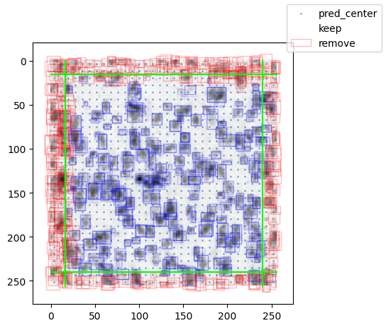

[13]:
# import numpy as np
# import matplotlib.pyplot as plt
# import os
# from matplotlib.patches import Rectangle
# import matplotlib as mpl
# import time
# import torch
# import random
# import sys
# sys.path.append('/home/abenneck/Desktop/yolo_model/docs/scripts')
# from yolo_help import bbox_to_rectangles, imshow, convert_data
# num_ch, tile_dim0, tile_dim1 = 3, 256, 256
import torch
import matplotlib.pyplot as plt
import os
import time
import numpy as np
import random
from matplotlib.patches import Rectangle
import tifffile
import importlib as imp
import sys
import yolo_tiles
imp.reload(yolo_tiles)
from yolo_tiles import img_to_tiles, apply_model_to_tiles, load_test_image, preprocess, remove_bbox_in_overlap
sys.path.append('/home/abenneck/Desktop/yolo_model/docs/scripts')
import yolo_help
imp.reload(yolo_help)
from yolo_help import bbox_to_rectangles, imshow, convert_data, Net, get_best_bounding_box_per_cell
import yolo_post_help
imp.reload(yolo_post_help)
from yolo_post_help import remove_low_conf_bboxes, postprocess, bb_to_rec
Load entire example image¶
[2]:
# img_dim0 = 1000
# img_dim1 = 2000
# img = np.random.rand(img_dim0, img_dim1)
img = plt.imread('/home/abenneck/Desktop/yolo_model/images/section_000197_30800.jpeg')
ch_idx = 0
img = img[:,:,ch_idx]
print(np.shape(img))
fig, ax = plt.subplots()
ax.imshow(img)
(7584, 9744)
[2]:
<matplotlib.image.AxesImage at 0x7131e62af580>
Original Tiles¶
[1]:
# # Define dimensions of the input image
# # img_dim0 = 1250
# # img_dim1 = 2300
# # img = np.random.rand(img_dim0, img_dim1)
# img = plt.imread('/home/abenneck/Desktop/yolo_model/images/section_000197_30800.jpeg')
# ch_idx = 0
# img = img[:,:,ch_idx]
# img_dim0, img_dim1 = np.shape(img)
# # Define the dimensions of the tiles to be extracted + minimum desired overlap between 2 adjacent tiles
# tile_dim0, tile_dim1 = 256,256
# min_overlap = 16
# outdir = '/home/abenneck/Desktop/yolo_model/tiles_all_ch'
# # If the 'threshold_perc'th percentile of a tile is >= 'threshold_bg', mark it as background
# threshold_bg = 210 # The threshold to determine whether a tile is bg or fg
# threshold_perc = 0.95 # The percentile of all pixels in the tile to check against threshold_bg
# # TODO: If the input image is smaller than the desired tile size, pad the input image with 0s?
# # Compute necessary values along axis 0
# tile_n0 = int(np.floor(img_dim0 / tile_dim0) + 1) # Number of tiles to extract along axis 0
# rem0 = tile_n0 * tile_dim0 - img_dim0 # # Number of REMAINING pixels if all tiles are placed adjacent + not overlapping over the original image
# while rem0 < min_overlap * tile_n0: # If there aren't enough pixels remaining, add another tile, and recompute the remainder. Continue until enough tiles have been added
# tile_n0 += 1
# rem0 = tile_n0 * tile_dim0 - img_dim0
# # Compute necessary values along axis 1
# tile_n1 = int(np.floor(img_dim1 / tile_dim1) + 1)
# rem1 = tile_n1 * tile_dim1 - img_dim1
# while rem1 < min_overlap * tile_n1:
# tile_n1 += 1
# rem1 = tile_n1 * tile_dim1 - img_dim1
# # Compute size of overlapping regions along each axis
# overlap0 = np.max([min_overlap, int(np.floor(rem0 / (tile_n0 - 1)))])
# overlap1 = np.max([min_overlap, int(np.floor(rem1 / (tile_n1 - 1)))])
# print(f'Dim0: {tile_n0} tiles, with {rem0} extra pixels ({overlap0} overlap)')
# print(f'Dim1: {tile_n1} tiles, with {rem1} extra pixels ({overlap1} overlap)')
# # Determine the upper-left corner of each tile
# all_upper_left_corners = []
# for i in range(tile_n0):
# coord_dim0 = i*(tile_dim0 - overlap0)
# if coord_dim0 + tile_dim0 >= img_dim0:
# coord_dim0 = img_dim0 - tile_dim0
# for j in range(tile_n1):
# coord_dim1 = j*(tile_dim1 - overlap1)
# if coord_dim1 + tile_dim1 >= img_dim1:
# coord_dim1 = img_dim1 - tile_dim1
# all_upper_left_corners.append([int(coord_dim0), int(coord_dim1), i, j])
# # Plot the tiles and borders over the input image
# fig, ax = plt.subplots()
# ax.imshow(img)
# for idx, p in enumerate(all_upper_left_corners):
# if idx % 6 == 0:
# fc = 'b'
# else:
# fc='none'
# bbox = Rectangle([p[1], p[0]], tile_dim0, tile_dim1, ec='r', fc=fc)
# ax.add_patch(bbox)
# idx0 = p[2]
# idx1 = p[3]
# p = p[:2]
# sub_img = img[p[0]:p[0]+tile_dim0, p[1]:p[1]+tile_dim1]
# # print(f'img[{p[0]}:{p[0]+tile_dim0}, {p[1]}:{p[1]+tile_dim1}]')
# # print(sub_img)
# if np.percentile(sub_img, threshold_perc) >= threshold_bg:
# bg = True
# else:
# bg = False
# # p: The (r,c) coord of the corner of the tile closest to the origin
# np.savez(os.path.join(outdir, f'sub_img_r{idx0}_c{idx1}.npz'), img = sub_img, p = p, bg = bg)
# # print(f'Saved tile [{idx0},{idx1}]')
# # ax.set_title(f'(over_r, over_c) = ({overlap0},{overlap1})')
# # ax.plot(all_upper_left_corners)
Extract and save all tiles from an input image¶
[24]:
start = time.time()
# Define dimensions of the input image
img = plt.imread('/home/abenneck/Desktop/yolo_model/images/section_000197_30800.jpeg')
img_dim0, img_dim1, num_ch = np.shape(img)
# Define the dimensions of the tiles to be extracted + minimum desired overlap between 2 adjacent tiles
tile_dim0, tile_dim1 = 256,256
min_overlap = 32 # Changed from 16 on 8/26/25
outdir = '/home/abenneck/Desktop/yolo_model/tiles_all_ch'
os.makedirs(outdir, exist_ok=True)
# If the 'threshold_perc'th percentile of a tile is >= 'threshold_bg', mark it as background
threshold_bg = 210 # The threshold to determine whether a tile is bg or fg
threshold_perc = 0.95 # The percentile of all pixels in the tile to check against threshold_bg
# TODO: If the input image is smaller than the desired tile size, pad the input image with 0s?
# Compute necessary values along axis 0
tile_n0 = int(np.floor(img_dim0 / (tile_dim0-min_overlap))) + 1 # Number of tiles to extract along axis 0
tile_n1 = int(np.floor(img_dim1 / (tile_dim1-min_overlap))) + 1
# Compute size of overlapping regions along each axis
overlap0 = min_overlap
overlap1 = min_overlap
print(f'Dim0: {tile_n0} tiles with {min_overlap} overlap')
print(f'Dim1: {tile_n1} tiles with {min_overlap} overlap')
# Determine the upper-left corner of each tile
all_upper_left_corners = []
for i in range(tile_n0):
coord_dim0 = i*(tile_dim0 - min_overlap)
if coord_dim0 + tile_dim0 >= img_dim0:
coord_dim0 = img_dim0 - tile_dim0
for j in range(tile_n1):
coord_dim1 = j*(tile_dim1 - min_overlap)
if coord_dim1 + tile_dim1 >= img_dim1:
coord_dim1 = img_dim1 - tile_dim1
all_upper_left_corners.append([int(coord_dim0), int(coord_dim1), i, j])
# Plot the tiles and borders over the input image
fig, ax = plt.subplots()
ax.imshow(img)
for idx, p in enumerate(all_upper_left_corners):
if idx % 6 == 0:
fc = 'b'
else:
fc='none'
bbox = Rectangle([p[1], p[0]], tile_dim0, tile_dim1, ec='r', fc=fc)
ax.add_patch(bbox)
idx0 = p[2]
idx1 = p[3]
p = p[:2]
# Extract tile to be saved for downstream processing
sub_img = img[p[0]:p[0]+tile_dim0, p[1]:p[1]+tile_dim1,:]
# Transpose image, so that it is in the proper format for the YOLO pipeline
sub_img = np.transpose(sub_img, (2,0,1))
if np.percentile(sub_img, threshold_perc) >= threshold_bg:
bg = True
else:
bg = False
# p: The (r,c) coord of the corner of the tile closest to the origin
if False:
np.savez(os.path.join(outdir, f'sub_img_r{idx0}_c{idx1}.npz'), img = sub_img, p = p, bg = bg)
print(f'Finished extracting + saving all tiles in {time.time()-start:.2f}s')
Dim0: 34 tiles with 32 overlap
Dim1: 44 tiles with 32 overlap
Finished extracting + saving all tiles in 3.79s
Apply the trained model to each tile¶
Load the model¶
[2]:
from yolo_help import Net
import torch
outdir_model = os.path.join('/home/abenneck/Desktop/yolo_outputs/models/nepochs_9854')
dtype = torch.float32
# cls_loss = torch.nn.CrossEntropyLoss(reduction='sum')
net = Net()
modelname = 'modelsave.pt'
net.load_state_dict(torch.load(os.path.join(outdir_model,modelname)))
lr = 1e-4
optimizer = torch.optim.Adam(net.parameters(),lr=lr)
optimizername = 'optimizersave.pt'
optimizer.load_state_dict(torch.load(os.path.join(outdir_model,optimizername)))
lossname = 'loss.pt'
Esave = torch.load(os.path.join(outdir_model,lossname))[0]
Define stitching functions + some bbox filtering¶
[3]:
# Check if 'bbox' meets our criteria using 'boundary_cond'
def isValid(bbox, boundary_cond, verbose=False):
# boundary_cond for exclusion zone and boundary_cond*2 for overlap/buffer zone
cx, cy, w, h = bbox
left_bound = cx - w/2
upper_bound = cy - h/2
tile_dim0, tile_dim1 = 256, 256
# if left_bound < 2*boundary_cond[0] or upper_bound < 2*boundary_cond[1]:
if left_bound < boundary_cond[0] or upper_bound < boundary_cond[1]:
# Part of bbox lies in the Upper/Left EXCLUSION zone
if verbose:
print(f'PART - Removed bbox with bounds ({left_bound:.2f},{upper_bound:.2f})')
return False
elif (left_bound >= (tile_dim0 - boundary_cond[0])) or (upper_bound >= (tile_dim1 - boundary_cond[1])):
# Entire bbox lies in the Lower/Right EXCLUSION zone
if verbose:
print(f'ENTIRE - Removed bbox with bounds ({left_bound:.2f},{upper_bound:.2f})')
return False
else:
if verbose:
print(f'Kept bbox with bounds ({left_bound:.2f},{upper_bound:.2f})')
return True
# Remove invalid bboxes from 'out' by setting the corresponding conf value in 'out' to -inf
def remove_bbox_in_overlap(out, B, stride, boundary_cond = [16,16]):
# Get the positions of the grid cells
x = torch.arange(out.shape[-1])*stride + (stride-1)/2
y = torch.arange(out.shape[-2])*stride + (stride-1)/2
YX = torch.stack(torch.meshgrid(y,x,indexing='ij'),0)
# Convert bbox0 data to dimensions that are relative to the original input
outB = out[:,:5]
x0 = (torch.sigmoid(outB[:,0])-0.5)*stride + YX[1] # between -0.5 and 0.5, scaled
y0 = (torch.sigmoid(outB[:,1])-0.5)*stride + YX[0]
w0 = torch.exp(outB[:,2])*stride
h0 = torch.exp(outB[:,3])*stride
x0 = x0 - w0/2
y0 = y0 - h0/2
# Convert bbox1 data to dimensions that are relative to the original input
outB = out[:,5:10]
x1 = (torch.sigmoid(outB[:,0])-0.5)*stride + YX[1] # between -0.5 and 0.5, scaled
y1 = (torch.sigmoid(outB[:,1])-0.5)*stride + YX[0]
w1 = torch.exp(outB[:,2])*stride
h1 = torch.exp(outB[:,3])*stride
x1 = x1 - w1/2
y1 = y1 - h1/2
# Modify model output by setting conf of invalid bboxes to -inf
numKeep = 0
numRemove = 0
for r in range(np.shape(out)[2]):
for c in range(np.shape(out)[3]):
line = out[0,:,r,c]
# Extract bbox0 info for grid cell (r,c)
x_ = x0[:,r,c].detach().numpy().item()
y_ = y0[:,r,c].detach().numpy().item()
w_ = w0[:,r,c].detach().numpy().item()
h_ = h0[:,r,c].detach().numpy().item()
bb0 = np.asarray([x_, y_, w_, h_])
# print(f'(0,{r},{c}) - {bb0} : ', end='')
if isValid(bb0, boundary_cond):
numKeep += 1
else:
out[:,4,r,c] = -np.inf
numRemove += 1
# Extract bbox1 info for grid cell (r,c)
x_ = x1[:,r,c].detach().numpy().item()
y_ = y1[:,r,c].detach().numpy().item()
w_ = w1[:,r,c].detach().numpy().item()
h_ = h1[:,r,c].detach().numpy().item()
bb1 = np.asarray([x_, y_, w_, h_])
# print(f'(1,{r},{c}) - {bb1} : ', end='')
if isValid(bb1, boundary_cond):
numKeep += 1
else:
out[:,9,r,c] = -np.inf
numRemove += 1
# Extract bbox data from model output
bboxes,data = convert_data(out,B,stride)
x = bboxes[...,0]
y = bboxes[...,1]
w = bboxes[...,2]
h = bboxes[...,3]
c = data[...,-1]
all_pred_bbox = torch.stack( (x.ravel(),y.ravel(),w.ravel(),h.ravel(),c.ravel()) ).T
# Objects for downstream data visualiztaion
bboxes_keep = all_pred_bbox[np.where(all_pred_bbox[:,-1].detach().numpy() > 0)]
bboxes_remove = all_pred_bbox[np.where(all_pred_bbox[:,-1].detach().numpy() == 0)]
return torch.Tensor(out), torch.Tensor(bboxes_keep), torch.Tensor(bboxes_remove)
Plot the bbox processing for 1 tile¶
[11]:
boundary_cond = [16,16]
start = time.time()
src_dir = '/home/abenneck/Desktop/yolo_model/tiles_all_ch'
for i, fname in enumerate(os.listdir(src_dir)):
data = np.load(os.path.join(src_dir, fname))
I = data['img']
p = data['p']
bg = data['bg']
if bg:
print(f'Skipping background tile {fname}')
# I = np.zeros(np.shape(I))
pass
# Apply trained model to the image + define some key model outputs
out = net((torch.tensor(I[None],dtype=dtype)))
B = net.B
stride = net.stride
bboxes,data = convert_data(out,B,stride)
# Convert bbox scale from processed image to original
fig,ax = plt.subplots()
x = torch.arange(out.shape[-1])*stride + (stride-1)/2
y = torch.arange(out.shape[-2])*stride + (stride-1)/2
YX = torch.stack(torch.meshgrid(y,x,indexing='ij'),0)
ax.imshow(I[0],cmap='gray')
ax.scatter(YX[1].ravel(),YX[0].ravel(),s=1,alpha=0.5)
# x = bboxes[...,0]
# y = bboxes[...,1]
# w = bboxes[...,2]
# h = bboxes[...,3]
# c = data[...,-1]
# Remove bboxes in overlapping region
# all_pred_bbox = torch.stack( (x.ravel(),y.ravel(),w.ravel(),h.ravel()) ).T
out, bbox_keep, bbox_remove = remove_bbox_in_overlap(out, B, stride, boundary_cond = boundary_cond)
# Shift bboxes to the original position
# bbox_keep[:,0] = bbox_keep[:,0] + p[1]
# bbox_keep[:,1] = bbox_keep[:,1] + p[0]
# bbox_remove[:,0] = bbox_remove[:,0] + p[1]
# bbox_remove[:,1] = bbox_remove[:,1] + p[0]
# Plot all bboxes as rectangles
conf = bbox_keep[:,-1]
predicted_rectangles = bbox_to_rectangles(bbox_keep[:,:4].detach().numpy(),fc='none',ec='b',alpha=conf.clone().detach()*0.5)
ax.add_collection(predicted_rectangles)
conf = bbox_remove[:,-1]
removed_rectangles = bbox_to_rectangles(bbox_remove[:,:4].detach().numpy(),fc='none',ec='r',alpha=np.ones([len(conf)])*0.25)
ax.add_collection(removed_rectangles)
# Plot exclusion/buffer zone lines (color=lime)
ax.plot(np.ones(I.shape[1]-1)*boundary_cond[0], np.linspace(0,I.shape[1],I.shape[1]-1), color='lime')
ax.plot(np.linspace(0,I.shape[2],I.shape[2]-1), np.ones(I.shape[2]-1)*boundary_cond[1], color='lime')
ax.plot(np.ones(I.shape[1]-1)*(tile_dim0-boundary_cond[0]), np.linspace(0,I.shape[1],I.shape[1]-1), color='lime')
ax.plot(np.linspace(0,I.shape[2],I.shape[2]-1), np.ones(I.shape[2]-1)*(tile_dim0-boundary_cond[1]), color='lime')
# Plot overlap zone lines (color=indigo)
# ax.plot(np.ones(I.shape[1]-1)*boundary_cond[0]*2, np.linspace(0,I.shape[1],I.shape[1]-1), color='indigo')
# ax.plot(np.linspace(0,I.shape[2],I.shape[2]-1), np.ones(I.shape[2]-1)*boundary_cond[1]*2, color='indigo')
fig.legend(['pred_center','keep','remove'])
fig.canvas.draw()
print(f'Finished tile {i} in {time.time()-start:.2f}s')
start = time.time()
if i == 0:
break
Finished tile 0 in 0.23s

Apply the bbox processing to the whole image¶
[32]:
start = time.time()
start_total = time.time()
boundary_cond = [16,16]
img_blank = np.zeros((num_ch, img_dim0, img_dim1))
tile_dim0, tile_dim1 = 256, 256
# tile_n0 and tile_n1 computed during tile preprocessing
ds_factor = 8
bbox_dim = 5
recon_blank = np.zeros((bbox_dim*2+num_ch, int(img_dim0/ds_factor), int(img_dim1/ds_factor)))
ntile_complete = 0
fig,ax = plt.subplots()
src_dir = '/home/abenneck/Desktop/yolo_model/tiles_all_ch'
for r in range(tile_n0)[::-1]:
for c in range(tile_n1)[::-1]:
fname = f'sub_img_r{r}_c{c}.npz'
data = np.load(os.path.join(src_dir, fname))
I = data['img']
p = data['p']
bg = data['bg']
ntile_complete += 1
if bg:
print(f'Skipping background tile {fname}')
else:
# Plot this tile on the empty canvas
img_blank[:,p[0]:p[0]+tile_dim0, p[1]:p[1]+tile_dim0] = I
# Apply trained model to the image + define some key model outputs
out = net((torch.tensor(I[None],dtype=dtype)))
B = net.B
stride = net.stride
out, bbox_keep, bbox_remove = remove_bbox_in_overlap(out, B, stride, boundary_cond = boundary_cond)
# Shift bboxes to the original position
bbox_keep[:,0] = bbox_keep[:,0] + p[1]
bbox_keep[:,1] = bbox_keep[:,1] + p[0]
bbox_remove[:,0] = bbox_remove[:,0] + p[1]
bbox_remove[:,1] = bbox_remove[:,1] + p[0]
# Plot all bboxes as rectangles
conf = bbox_keep[:,-1]
predicted_rectangles = bbox_to_rectangles(bbox_keep[:,:4].detach().numpy(),fc='none',ec='b',alpha=conf.clone().detach()*0.5)
ax.add_collection(predicted_rectangles)
conf = bbox_remove[:,-1]
removed_rectangles = bbox_to_rectangles(bbox_remove[:,:4].detach().numpy(),fc='none',ec='r',alpha=np.ones([len(conf)])*0.25)
ax.add_collection(removed_rectangles)
# Append model output to reconstruction
recon_blank[:,int(p[0]/ds_factor):int((p[0]+tile_dim0)/ds_factor), int(p[1]/ds_factor):int((p[1]+tile_dim0)/ds_factor)] = out[0].detach().numpy()
print(f'Finished tile {ntile_complete}/{tile_n0*tile_n1} in {time.time()-start:.2f}s')
start = time.time()
# if i == 1:
# break
fig.legend(['pred_center','keep','remove'])
ax.imshow(img_blank[0])
# ax.set_xlim([3000,4000])
# ax.set_ylim([5000,4000])
# ax.set_xlim([3400,3700])
# ax.set_ylim([4800,4500])
fig.canvas.draw()
if False:
np.savez(os.path.join(outdir, f'recon.npz'), data = recon_blank)
print(f'Finished entire image in {time.time()-start_total:.2f}s')
Skipping background tile sub_img_r33_c43.npz
Skipping background tile sub_img_r33_c42.npz
Skipping background tile sub_img_r33_c41.npz
Skipping background tile sub_img_r33_c40.npz
Skipping background tile sub_img_r33_c39.npz
Skipping background tile sub_img_r33_c38.npz
Skipping background tile sub_img_r33_c37.npz
Skipping background tile sub_img_r33_c36.npz
Skipping background tile sub_img_r33_c35.npz
Skipping background tile sub_img_r33_c34.npz
Skipping background tile sub_img_r33_c33.npz
Skipping background tile sub_img_r33_c32.npz
Skipping background tile sub_img_r33_c31.npz
Skipping background tile sub_img_r33_c30.npz
Skipping background tile sub_img_r33_c29.npz
Skipping background tile sub_img_r33_c28.npz
Skipping background tile sub_img_r33_c27.npz
Finished tile 18/1496 in 0.24s
Skipping background tile sub_img_r33_c25.npz
Skipping background tile sub_img_r33_c24.npz
Skipping background tile sub_img_r33_c23.npz
Skipping background tile sub_img_r33_c22.npz
Skipping background tile sub_img_r33_c21.npz
Skipping background tile sub_img_r33_c20.npz
Skipping background tile sub_img_r33_c19.npz
Skipping background tile sub_img_r33_c18.npz
Skipping background tile sub_img_r33_c17.npz
Skipping background tile sub_img_r33_c16.npz
Skipping background tile sub_img_r33_c15.npz
Skipping background tile sub_img_r33_c14.npz
Skipping background tile sub_img_r33_c13.npz
Skipping background tile sub_img_r33_c12.npz
Skipping background tile sub_img_r33_c11.npz
Skipping background tile sub_img_r33_c10.npz
Skipping background tile sub_img_r33_c9.npz
Skipping background tile sub_img_r33_c8.npz
Skipping background tile sub_img_r33_c7.npz
Skipping background tile sub_img_r33_c6.npz
Skipping background tile sub_img_r33_c5.npz
Skipping background tile sub_img_r33_c4.npz
Skipping background tile sub_img_r33_c3.npz
Skipping background tile sub_img_r33_c2.npz
Skipping background tile sub_img_r33_c1.npz
Skipping background tile sub_img_r33_c0.npz
Skipping background tile sub_img_r32_c43.npz
Skipping background tile sub_img_r32_c42.npz
Skipping background tile sub_img_r32_c41.npz
Skipping background tile sub_img_r32_c40.npz
Skipping background tile sub_img_r32_c39.npz
Skipping background tile sub_img_r32_c38.npz
Skipping background tile sub_img_r32_c37.npz
Skipping background tile sub_img_r32_c36.npz
Skipping background tile sub_img_r32_c35.npz
Skipping background tile sub_img_r32_c34.npz
Skipping background tile sub_img_r32_c33.npz
Skipping background tile sub_img_r32_c32.npz
Skipping background tile sub_img_r32_c31.npz
Skipping background tile sub_img_r32_c30.npz
Skipping background tile sub_img_r32_c29.npz
Skipping background tile sub_img_r32_c28.npz
Skipping background tile sub_img_r32_c27.npz
Skipping background tile sub_img_r32_c26.npz
Finished tile 63/1496 in 0.16s
Finished tile 64/1496 in 0.14s
Skipping background tile sub_img_r32_c23.npz
Skipping background tile sub_img_r32_c22.npz
Skipping background tile sub_img_r32_c21.npz
Skipping background tile sub_img_r32_c20.npz
Skipping background tile sub_img_r32_c19.npz
Skipping background tile sub_img_r32_c18.npz
Skipping background tile sub_img_r32_c17.npz
Skipping background tile sub_img_r32_c16.npz
Skipping background tile sub_img_r32_c15.npz
Skipping background tile sub_img_r32_c14.npz
Skipping background tile sub_img_r32_c13.npz
Skipping background tile sub_img_r32_c12.npz
Skipping background tile sub_img_r32_c11.npz
Skipping background tile sub_img_r32_c10.npz
Skipping background tile sub_img_r32_c9.npz
Skipping background tile sub_img_r32_c8.npz
Skipping background tile sub_img_r32_c7.npz
Skipping background tile sub_img_r32_c6.npz
Skipping background tile sub_img_r32_c5.npz
Skipping background tile sub_img_r32_c4.npz
Skipping background tile sub_img_r32_c3.npz
Skipping background tile sub_img_r32_c2.npz
Skipping background tile sub_img_r32_c1.npz
Skipping background tile sub_img_r32_c0.npz
Skipping background tile sub_img_r31_c43.npz
Skipping background tile sub_img_r31_c42.npz
Skipping background tile sub_img_r31_c41.npz
Skipping background tile sub_img_r31_c40.npz
Skipping background tile sub_img_r31_c39.npz
Skipping background tile sub_img_r31_c38.npz
Skipping background tile sub_img_r31_c37.npz
Skipping background tile sub_img_r31_c36.npz
Skipping background tile sub_img_r31_c35.npz
Skipping background tile sub_img_r31_c34.npz
Skipping background tile sub_img_r31_c33.npz
Skipping background tile sub_img_r31_c32.npz
Skipping background tile sub_img_r31_c31.npz
Skipping background tile sub_img_r31_c30.npz
Finished tile 103/1496 in 0.16s
Finished tile 104/1496 in 0.14s
Skipping background tile sub_img_r31_c27.npz
Skipping background tile sub_img_r31_c26.npz
Finished tile 107/1496 in 0.14s
Finished tile 108/1496 in 0.14s
Finished tile 109/1496 in 0.16s
Finished tile 110/1496 in 0.14s
Skipping background tile sub_img_r31_c21.npz
Skipping background tile sub_img_r31_c20.npz
Skipping background tile sub_img_r31_c19.npz
Skipping background tile sub_img_r31_c18.npz
Skipping background tile sub_img_r31_c17.npz
Skipping background tile sub_img_r31_c16.npz
Finished tile 117/1496 in 0.15s
Finished tile 118/1496 in 0.14s
Finished tile 119/1496 in 0.16s
Skipping background tile sub_img_r31_c12.npz
Finished tile 121/1496 in 0.15s
Skipping background tile sub_img_r31_c10.npz
Skipping background tile sub_img_r31_c9.npz
Skipping background tile sub_img_r31_c8.npz
Skipping background tile sub_img_r31_c7.npz
Skipping background tile sub_img_r31_c6.npz
Skipping background tile sub_img_r31_c5.npz
Skipping background tile sub_img_r31_c4.npz
Skipping background tile sub_img_r31_c3.npz
Skipping background tile sub_img_r31_c2.npz
Skipping background tile sub_img_r31_c1.npz
Skipping background tile sub_img_r31_c0.npz
Skipping background tile sub_img_r30_c43.npz
Skipping background tile sub_img_r30_c42.npz
Skipping background tile sub_img_r30_c41.npz
Skipping background tile sub_img_r30_c40.npz
Skipping background tile sub_img_r30_c39.npz
Skipping background tile sub_img_r30_c38.npz
Skipping background tile sub_img_r30_c37.npz
Skipping background tile sub_img_r30_c36.npz
Skipping background tile sub_img_r30_c35.npz
Skipping background tile sub_img_r30_c34.npz
Skipping background tile sub_img_r30_c33.npz
Skipping background tile sub_img_r30_c32.npz
Finished tile 145/1496 in 0.15s
Finished tile 146/1496 in 0.14s
Finished tile 147/1496 in 0.17s
Finished tile 148/1496 in 0.19s
Finished tile 149/1496 in 0.14s
Finished tile 150/1496 in 0.14s
Finished tile 151/1496 in 0.14s
Finished tile 152/1496 in 0.14s
Finished tile 153/1496 in 0.15s
Finished tile 154/1496 in 0.14s
Skipping background tile sub_img_r30_c21.npz
Skipping background tile sub_img_r30_c20.npz
Skipping background tile sub_img_r30_c19.npz
Skipping background tile sub_img_r30_c18.npz
Finished tile 159/1496 in 0.14s
Finished tile 160/1496 in 0.14s
Finished tile 161/1496 in 0.14s
Finished tile 162/1496 in 0.14s
Finished tile 163/1496 in 0.14s
Finished tile 164/1496 in 0.14s
Finished tile 165/1496 in 0.14s
Skipping background tile sub_img_r30_c10.npz
Skipping background tile sub_img_r30_c9.npz
Skipping background tile sub_img_r30_c8.npz
Skipping background tile sub_img_r30_c7.npz
Skipping background tile sub_img_r30_c6.npz
Skipping background tile sub_img_r30_c5.npz
Skipping background tile sub_img_r30_c4.npz
Skipping background tile sub_img_r30_c3.npz
Skipping background tile sub_img_r30_c2.npz
Skipping background tile sub_img_r30_c1.npz
Skipping background tile sub_img_r30_c0.npz
Skipping background tile sub_img_r29_c43.npz
Skipping background tile sub_img_r29_c42.npz
Skipping background tile sub_img_r29_c41.npz
Skipping background tile sub_img_r29_c40.npz
Skipping background tile sub_img_r29_c39.npz
Skipping background tile sub_img_r29_c38.npz
Skipping background tile sub_img_r29_c37.npz
Skipping background tile sub_img_r29_c36.npz
Skipping background tile sub_img_r29_c35.npz
Skipping background tile sub_img_r29_c34.npz
Finished tile 187/1496 in 0.15s
Finished tile 188/1496 in 0.15s
Finished tile 189/1496 in 0.15s
Finished tile 190/1496 in 0.15s
Finished tile 191/1496 in 0.14s
Finished tile 192/1496 in 0.14s
Finished tile 193/1496 in 0.20s
Finished tile 194/1496 in 0.14s
Finished tile 195/1496 in 0.14s
Finished tile 196/1496 in 0.15s
Finished tile 197/1496 in 0.14s
Finished tile 198/1496 in 0.15s
Skipping background tile sub_img_r29_c21.npz
Skipping background tile sub_img_r29_c20.npz
Finished tile 201/1496 in 0.14s
Finished tile 202/1496 in 0.14s
Finished tile 203/1496 in 0.14s
Finished tile 204/1496 in 0.14s
Finished tile 205/1496 in 0.14s
Finished tile 206/1496 in 0.14s
Finished tile 207/1496 in 0.14s
Finished tile 208/1496 in 0.14s
Finished tile 209/1496 in 0.14s
Skipping background tile sub_img_r29_c10.npz
Skipping background tile sub_img_r29_c9.npz
Skipping background tile sub_img_r29_c8.npz
Skipping background tile sub_img_r29_c7.npz
Skipping background tile sub_img_r29_c6.npz
Skipping background tile sub_img_r29_c5.npz
Skipping background tile sub_img_r29_c4.npz
Skipping background tile sub_img_r29_c3.npz
Skipping background tile sub_img_r29_c2.npz
Skipping background tile sub_img_r29_c1.npz
Skipping background tile sub_img_r29_c0.npz
Skipping background tile sub_img_r28_c43.npz
Skipping background tile sub_img_r28_c42.npz
Skipping background tile sub_img_r28_c41.npz
Skipping background tile sub_img_r28_c40.npz
Skipping background tile sub_img_r28_c39.npz
Skipping background tile sub_img_r28_c38.npz
Skipping background tile sub_img_r28_c37.npz
Skipping background tile sub_img_r28_c36.npz
Skipping background tile sub_img_r28_c35.npz
Skipping background tile sub_img_r28_c34.npz
Finished tile 231/1496 in 0.15s
Finished tile 232/1496 in 0.14s
Finished tile 233/1496 in 0.14s
Finished tile 234/1496 in 0.14s
Finished tile 235/1496 in 0.14s
Finished tile 236/1496 in 0.14s
Finished tile 237/1496 in 0.14s
Finished tile 238/1496 in 0.14s
Finished tile 239/1496 in 0.14s
Finished tile 240/1496 in 0.14s
Finished tile 241/1496 in 0.14s
Finished tile 242/1496 in 0.14s
Finished tile 243/1496 in 0.14s
Finished tile 244/1496 in 0.14s
Finished tile 245/1496 in 0.19s
Finished tile 246/1496 in 0.15s
Finished tile 247/1496 in 0.14s
Finished tile 248/1496 in 0.14s
Finished tile 249/1496 in 0.14s
Finished tile 250/1496 in 0.14s
Finished tile 251/1496 in 0.14s
Finished tile 252/1496 in 0.14s
Finished tile 253/1496 in 0.14s
Finished tile 254/1496 in 0.14s
Finished tile 255/1496 in 0.15s
Finished tile 256/1496 in 0.14s
Skipping background tile sub_img_r28_c7.npz
Skipping background tile sub_img_r28_c6.npz
Skipping background tile sub_img_r28_c5.npz
Skipping background tile sub_img_r28_c4.npz
Skipping background tile sub_img_r28_c3.npz
Skipping background tile sub_img_r28_c2.npz
Skipping background tile sub_img_r28_c1.npz
Skipping background tile sub_img_r28_c0.npz
Skipping background tile sub_img_r27_c43.npz
Skipping background tile sub_img_r27_c42.npz
Skipping background tile sub_img_r27_c41.npz
Skipping background tile sub_img_r27_c40.npz
Skipping background tile sub_img_r27_c39.npz
Skipping background tile sub_img_r27_c38.npz
Skipping background tile sub_img_r27_c37.npz
Skipping background tile sub_img_r27_c36.npz
Finished tile 273/1496 in 0.15s
Finished tile 274/1496 in 0.14s
Finished tile 275/1496 in 0.14s
Finished tile 276/1496 in 0.14s
Finished tile 277/1496 in 0.14s
Finished tile 278/1496 in 0.14s
Finished tile 279/1496 in 0.14s
Finished tile 280/1496 in 0.14s
Finished tile 281/1496 in 0.14s
Finished tile 282/1496 in 0.14s
Finished tile 283/1496 in 0.14s
Finished tile 284/1496 in 0.14s
Finished tile 285/1496 in 0.14s
Finished tile 286/1496 in 0.14s
Finished tile 287/1496 in 0.14s
Finished tile 288/1496 in 0.14s
Finished tile 289/1496 in 0.14s
Finished tile 290/1496 in 0.14s
Finished tile 291/1496 in 0.15s
Finished tile 292/1496 in 0.14s
Finished tile 293/1496 in 0.15s
Finished tile 294/1496 in 0.14s
Finished tile 295/1496 in 0.15s
Finished tile 296/1496 in 0.14s
Finished tile 297/1496 in 0.14s
Finished tile 298/1496 in 0.14s
Finished tile 299/1496 in 0.14s
Finished tile 300/1496 in 0.14s
Finished tile 301/1496 in 0.14s
Skipping background tile sub_img_r27_c6.npz
Skipping background tile sub_img_r27_c5.npz
Skipping background tile sub_img_r27_c4.npz
Skipping background tile sub_img_r27_c3.npz
Skipping background tile sub_img_r27_c2.npz
Skipping background tile sub_img_r27_c1.npz
Skipping background tile sub_img_r27_c0.npz
Skipping background tile sub_img_r26_c43.npz
Skipping background tile sub_img_r26_c42.npz
Skipping background tile sub_img_r26_c41.npz
Skipping background tile sub_img_r26_c40.npz
Finished tile 313/1496 in 0.15s
Skipping background tile sub_img_r26_c38.npz
Skipping background tile sub_img_r26_c37.npz
Finished tile 316/1496 in 0.15s
Finished tile 317/1496 in 0.14s
Finished tile 318/1496 in 0.14s
Finished tile 319/1496 in 0.14s
Finished tile 320/1496 in 0.14s
Finished tile 321/1496 in 0.14s
Finished tile 322/1496 in 0.17s
Finished tile 323/1496 in 0.14s
Finished tile 324/1496 in 0.14s
Finished tile 325/1496 in 0.14s
Finished tile 326/1496 in 0.14s
Finished tile 327/1496 in 0.14s
Finished tile 328/1496 in 0.14s
Finished tile 329/1496 in 0.14s
Finished tile 330/1496 in 0.15s
Finished tile 331/1496 in 0.14s
Finished tile 332/1496 in 0.14s
Finished tile 333/1496 in 0.16s
Finished tile 334/1496 in 0.14s
Finished tile 335/1496 in 0.14s
Finished tile 336/1496 in 0.15s
Finished tile 337/1496 in 0.14s
Finished tile 338/1496 in 0.15s
Finished tile 339/1496 in 0.14s
Finished tile 340/1496 in 0.14s
Finished tile 341/1496 in 0.16s
Finished tile 342/1496 in 0.14s
Finished tile 343/1496 in 0.14s
Finished tile 344/1496 in 0.14s
Finished tile 345/1496 in 0.14s
Skipping background tile sub_img_r26_c6.npz
Skipping background tile sub_img_r26_c5.npz
Skipping background tile sub_img_r26_c4.npz
Skipping background tile sub_img_r26_c3.npz
Skipping background tile sub_img_r26_c2.npz
Skipping background tile sub_img_r26_c1.npz
Skipping background tile sub_img_r26_c0.npz
Skipping background tile sub_img_r25_c43.npz
Skipping background tile sub_img_r25_c42.npz
Skipping background tile sub_img_r25_c41.npz
Skipping background tile sub_img_r25_c40.npz
Skipping background tile sub_img_r25_c39.npz
Skipping background tile sub_img_r25_c38.npz
Skipping background tile sub_img_r25_c37.npz
Finished tile 360/1496 in 0.16s
Finished tile 361/1496 in 0.14s
Finished tile 362/1496 in 0.14s
Finished tile 363/1496 in 0.14s
Finished tile 364/1496 in 0.14s
Finished tile 365/1496 in 0.14s
Finished tile 366/1496 in 0.14s
Finished tile 367/1496 in 0.14s
Finished tile 368/1496 in 0.14s
Finished tile 369/1496 in 0.14s
Finished tile 370/1496 in 0.14s
Finished tile 371/1496 in 0.14s
Finished tile 372/1496 in 0.14s
Finished tile 373/1496 in 0.14s
Finished tile 374/1496 in 1.12s
Finished tile 375/1496 in 0.15s
Finished tile 376/1496 in 0.15s
Finished tile 377/1496 in 0.14s
Finished tile 378/1496 in 0.14s
Finished tile 379/1496 in 0.15s
Finished tile 380/1496 in 0.15s
Finished tile 381/1496 in 0.15s
Finished tile 382/1496 in 0.15s
Finished tile 383/1496 in 0.14s
Finished tile 384/1496 in 0.14s
Finished tile 385/1496 in 0.14s
Finished tile 386/1496 in 0.14s
Finished tile 387/1496 in 0.17s
Finished tile 388/1496 in 0.15s
Finished tile 389/1496 in 0.14s
Finished tile 390/1496 in 0.14s
Skipping background tile sub_img_r25_c5.npz
Skipping background tile sub_img_r25_c4.npz
Skipping background tile sub_img_r25_c3.npz
Skipping background tile sub_img_r25_c2.npz
Skipping background tile sub_img_r25_c1.npz
Skipping background tile sub_img_r25_c0.npz
Skipping background tile sub_img_r24_c43.npz
Skipping background tile sub_img_r24_c42.npz
Skipping background tile sub_img_r24_c41.npz
Skipping background tile sub_img_r24_c40.npz
Skipping background tile sub_img_r24_c39.npz
Skipping background tile sub_img_r24_c38.npz
Finished tile 403/1496 in 0.15s
Finished tile 404/1496 in 0.15s
Finished tile 405/1496 in 0.14s
Finished tile 406/1496 in 0.15s
Finished tile 407/1496 in 0.14s
Finished tile 408/1496 in 0.14s
Finished tile 409/1496 in 0.14s
Finished tile 410/1496 in 0.14s
Finished tile 411/1496 in 0.15s
Finished tile 412/1496 in 0.14s
Finished tile 413/1496 in 0.14s
Finished tile 414/1496 in 0.14s
Finished tile 415/1496 in 0.14s
Finished tile 416/1496 in 0.14s
Finished tile 417/1496 in 0.14s
Finished tile 418/1496 in 0.15s
Finished tile 419/1496 in 0.14s
Finished tile 420/1496 in 0.15s
Finished tile 421/1496 in 0.15s
Finished tile 422/1496 in 0.14s
Finished tile 423/1496 in 0.14s
Finished tile 424/1496 in 0.14s
Finished tile 425/1496 in 0.14s
Finished tile 426/1496 in 0.14s
Finished tile 427/1496 in 0.14s
Finished tile 428/1496 in 0.14s
Finished tile 429/1496 in 0.14s
Finished tile 430/1496 in 0.14s
Finished tile 431/1496 in 0.14s
Finished tile 432/1496 in 0.14s
Finished tile 433/1496 in 0.14s
Finished tile 434/1496 in 0.14s
Finished tile 435/1496 in 0.15s
Skipping background tile sub_img_r24_c4.npz
Skipping background tile sub_img_r24_c3.npz
Skipping background tile sub_img_r24_c2.npz
Skipping background tile sub_img_r24_c1.npz
Skipping background tile sub_img_r24_c0.npz
Skipping background tile sub_img_r23_c43.npz
Skipping background tile sub_img_r23_c42.npz
Skipping background tile sub_img_r23_c41.npz
Skipping background tile sub_img_r23_c40.npz
Skipping background tile sub_img_r23_c39.npz
Finished tile 446/1496 in 0.15s
Finished tile 447/1496 in 0.14s
Finished tile 448/1496 in 0.14s
Finished tile 449/1496 in 0.14s
Finished tile 450/1496 in 0.14s
Finished tile 451/1496 in 0.15s
Finished tile 452/1496 in 0.14s
Finished tile 453/1496 in 0.14s
Finished tile 454/1496 in 0.14s
Finished tile 455/1496 in 0.14s
Finished tile 456/1496 in 0.15s
Finished tile 457/1496 in 0.14s
Finished tile 458/1496 in 0.14s
Finished tile 459/1496 in 0.15s
Finished tile 460/1496 in 0.14s
Finished tile 461/1496 in 0.14s
Finished tile 462/1496 in 0.17s
Finished tile 463/1496 in 0.17s
Finished tile 464/1496 in 0.14s
Finished tile 465/1496 in 0.14s
Finished tile 466/1496 in 0.14s
Finished tile 467/1496 in 0.14s
Finished tile 468/1496 in 0.14s
Finished tile 469/1496 in 0.15s
Finished tile 470/1496 in 0.18s
Finished tile 471/1496 in 0.14s
Finished tile 472/1496 in 0.15s
Finished tile 473/1496 in 0.14s
Finished tile 474/1496 in 0.16s
Finished tile 475/1496 in 0.14s
Finished tile 476/1496 in 0.18s
Finished tile 477/1496 in 0.15s
Finished tile 478/1496 in 0.15s
Finished tile 479/1496 in 0.15s
Skipping background tile sub_img_r23_c4.npz
Skipping background tile sub_img_r23_c3.npz
Skipping background tile sub_img_r23_c2.npz
Skipping background tile sub_img_r23_c1.npz
Skipping background tile sub_img_r23_c0.npz
Skipping background tile sub_img_r22_c43.npz
Skipping background tile sub_img_r22_c42.npz
Skipping background tile sub_img_r22_c41.npz
Skipping background tile sub_img_r22_c40.npz
Skipping background tile sub_img_r22_c39.npz
Finished tile 490/1496 in 0.15s
Finished tile 491/1496 in 0.15s
Finished tile 492/1496 in 0.15s
Finished tile 493/1496 in 0.14s
Finished tile 494/1496 in 0.14s
Finished tile 495/1496 in 0.15s
Finished tile 496/1496 in 0.37s
Finished tile 497/1496 in 0.14s
Finished tile 498/1496 in 0.15s
Finished tile 499/1496 in 0.14s
Finished tile 500/1496 in 0.14s
Finished tile 501/1496 in 0.14s
Finished tile 502/1496 in 0.15s
Finished tile 503/1496 in 0.14s
Finished tile 504/1496 in 0.15s
Finished tile 505/1496 in 0.14s
Finished tile 506/1496 in 0.14s
Finished tile 507/1496 in 0.14s
Finished tile 508/1496 in 0.14s
Finished tile 509/1496 in 0.14s
Finished tile 510/1496 in 0.14s
Finished tile 511/1496 in 0.14s
Finished tile 512/1496 in 0.15s
Finished tile 513/1496 in 0.15s
Finished tile 514/1496 in 0.15s
Finished tile 515/1496 in 0.14s
Finished tile 516/1496 in 0.14s
Finished tile 517/1496 in 0.14s
Finished tile 518/1496 in 0.15s
Finished tile 519/1496 in 0.15s
Finished tile 520/1496 in 0.14s
Finished tile 521/1496 in 0.14s
Finished tile 522/1496 in 0.14s
Finished tile 523/1496 in 0.14s
Finished tile 524/1496 in 0.14s
Skipping background tile sub_img_r22_c3.npz
Skipping background tile sub_img_r22_c2.npz
Skipping background tile sub_img_r22_c1.npz
Skipping background tile sub_img_r22_c0.npz
Skipping background tile sub_img_r21_c43.npz
Skipping background tile sub_img_r21_c42.npz
Skipping background tile sub_img_r21_c41.npz
Skipping background tile sub_img_r21_c40.npz
Finished tile 533/1496 in 0.14s
Finished tile 534/1496 in 0.14s
Finished tile 535/1496 in 0.14s
Finished tile 536/1496 in 0.14s
Finished tile 537/1496 in 0.15s
Finished tile 538/1496 in 0.15s
Finished tile 539/1496 in 0.15s
Finished tile 540/1496 in 0.15s
Finished tile 541/1496 in 0.14s
Finished tile 542/1496 in 0.14s
Finished tile 543/1496 in 0.15s
Finished tile 544/1496 in 0.14s
Finished tile 545/1496 in 0.14s
Finished tile 546/1496 in 0.16s
Finished tile 547/1496 in 0.15s
Finished tile 548/1496 in 0.14s
Finished tile 549/1496 in 0.14s
Finished tile 550/1496 in 0.14s
Finished tile 551/1496 in 0.14s
Finished tile 552/1496 in 0.14s
Finished tile 553/1496 in 0.14s
Finished tile 554/1496 in 0.16s
Finished tile 555/1496 in 0.14s
Finished tile 556/1496 in 0.14s
Finished tile 557/1496 in 0.14s
Finished tile 558/1496 in 0.14s
Finished tile 559/1496 in 0.14s
Finished tile 560/1496 in 0.14s
Finished tile 561/1496 in 0.14s
Finished tile 562/1496 in 0.14s
Finished tile 563/1496 in 0.14s
Finished tile 564/1496 in 0.14s
Finished tile 565/1496 in 0.14s
Finished tile 566/1496 in 0.14s
Finished tile 567/1496 in 0.14s
Finished tile 568/1496 in 0.15s
Finished tile 569/1496 in 0.14s
Skipping background tile sub_img_r21_c2.npz
Skipping background tile sub_img_r21_c1.npz
Skipping background tile sub_img_r21_c0.npz
Skipping background tile sub_img_r20_c43.npz
Skipping background tile sub_img_r20_c42.npz
Skipping background tile sub_img_r20_c41.npz
Skipping background tile sub_img_r20_c40.npz
Finished tile 577/1496 in 0.15s
Finished tile 578/1496 in 0.14s
Finished tile 579/1496 in 0.14s
Finished tile 580/1496 in 0.15s
Finished tile 581/1496 in 0.14s
Finished tile 582/1496 in 0.14s
Finished tile 583/1496 in 0.14s
Finished tile 584/1496 in 0.14s
Finished tile 585/1496 in 0.14s
Finished tile 586/1496 in 0.14s
Finished tile 587/1496 in 0.14s
Finished tile 588/1496 in 0.14s
Finished tile 589/1496 in 0.15s
Finished tile 590/1496 in 0.14s
Finished tile 591/1496 in 0.14s
Finished tile 592/1496 in 0.14s
Finished tile 593/1496 in 0.14s
Finished tile 594/1496 in 0.14s
Finished tile 595/1496 in 0.14s
Finished tile 596/1496 in 0.15s
Finished tile 597/1496 in 0.14s
Finished tile 598/1496 in 0.14s
Finished tile 599/1496 in 0.14s
Finished tile 600/1496 in 0.14s
Finished tile 601/1496 in 0.14s
Finished tile 602/1496 in 0.14s
Finished tile 603/1496 in 0.14s
Finished tile 604/1496 in 0.14s
Finished tile 605/1496 in 0.14s
Finished tile 606/1496 in 0.14s
Finished tile 607/1496 in 0.14s
Finished tile 608/1496 in 0.14s
Finished tile 609/1496 in 0.14s
Finished tile 610/1496 in 0.14s
Finished tile 611/1496 in 0.15s
Finished tile 612/1496 in 0.14s
Finished tile 613/1496 in 0.14s
Skipping background tile sub_img_r20_c2.npz
Skipping background tile sub_img_r20_c1.npz
Skipping background tile sub_img_r20_c0.npz
Skipping background tile sub_img_r19_c43.npz
Skipping background tile sub_img_r19_c42.npz
Skipping background tile sub_img_r19_c41.npz
Skipping background tile sub_img_r19_c40.npz
Finished tile 621/1496 in 0.15s
Finished tile 622/1496 in 0.15s
Finished tile 623/1496 in 0.37s
Finished tile 624/1496 in 0.14s
Finished tile 625/1496 in 0.15s
Finished tile 626/1496 in 0.15s
Finished tile 627/1496 in 0.14s
Finished tile 628/1496 in 0.14s
Finished tile 629/1496 in 0.14s
Finished tile 630/1496 in 0.14s
Finished tile 631/1496 in 0.14s
Finished tile 632/1496 in 0.14s
Finished tile 633/1496 in 0.14s
Finished tile 634/1496 in 0.14s
Finished tile 635/1496 in 0.14s
Finished tile 636/1496 in 0.14s
Finished tile 637/1496 in 0.15s
Finished tile 638/1496 in 0.15s
Finished tile 639/1496 in 0.14s
Finished tile 640/1496 in 0.14s
Finished tile 641/1496 in 0.14s
Finished tile 642/1496 in 0.14s
Finished tile 643/1496 in 0.14s
Finished tile 644/1496 in 0.15s
Finished tile 645/1496 in 0.14s
Finished tile 646/1496 in 0.14s
Finished tile 647/1496 in 0.14s
Finished tile 648/1496 in 0.14s
Finished tile 649/1496 in 0.14s
Finished tile 650/1496 in 0.14s
Finished tile 651/1496 in 0.16s
Finished tile 652/1496 in 0.14s
Finished tile 653/1496 in 0.15s
Finished tile 654/1496 in 0.14s
Finished tile 655/1496 in 0.14s
Finished tile 656/1496 in 0.14s
Finished tile 657/1496 in 0.14s
Skipping background tile sub_img_r19_c2.npz
Skipping background tile sub_img_r19_c1.npz
Skipping background tile sub_img_r19_c0.npz
Skipping background tile sub_img_r18_c43.npz
Skipping background tile sub_img_r18_c42.npz
Skipping background tile sub_img_r18_c41.npz
Finished tile 664/1496 in 0.15s
Finished tile 665/1496 in 0.14s
Finished tile 666/1496 in 0.14s
Finished tile 667/1496 in 0.14s
Finished tile 668/1496 in 0.14s
Finished tile 669/1496 in 0.14s
Finished tile 670/1496 in 0.14s
Finished tile 671/1496 in 0.15s
Finished tile 672/1496 in 0.14s
Finished tile 673/1496 in 0.14s
Finished tile 674/1496 in 0.14s
Finished tile 675/1496 in 0.15s
Finished tile 676/1496 in 0.14s
Finished tile 677/1496 in 0.14s
Finished tile 678/1496 in 0.14s
Finished tile 679/1496 in 0.14s
Finished tile 680/1496 in 0.14s
Finished tile 681/1496 in 0.14s
Finished tile 682/1496 in 0.14s
Finished tile 683/1496 in 0.14s
Finished tile 684/1496 in 0.14s
Finished tile 685/1496 in 0.15s
Finished tile 686/1496 in 0.14s
Finished tile 687/1496 in 0.14s
Finished tile 688/1496 in 0.14s
Finished tile 689/1496 in 0.14s
Finished tile 690/1496 in 0.14s
Finished tile 691/1496 in 0.14s
Finished tile 692/1496 in 0.14s
Finished tile 693/1496 in 0.14s
Finished tile 694/1496 in 0.14s
Finished tile 695/1496 in 0.14s
Finished tile 696/1496 in 0.14s
Finished tile 697/1496 in 0.14s
Finished tile 698/1496 in 0.14s
Finished tile 699/1496 in 0.15s
Finished tile 700/1496 in 0.14s
Finished tile 701/1496 in 0.15s
Finished tile 702/1496 in 0.14s
Skipping background tile sub_img_r18_c1.npz
Skipping background tile sub_img_r18_c0.npz
Skipping background tile sub_img_r17_c43.npz
Skipping background tile sub_img_r17_c42.npz
Skipping background tile sub_img_r17_c41.npz
Finished tile 708/1496 in 0.14s
Finished tile 709/1496 in 0.14s
Finished tile 710/1496 in 0.14s
Finished tile 711/1496 in 0.14s
Finished tile 712/1496 in 0.14s
Finished tile 713/1496 in 0.14s
Finished tile 714/1496 in 0.14s
Finished tile 715/1496 in 0.14s
Finished tile 716/1496 in 0.14s
Finished tile 717/1496 in 0.14s
Finished tile 718/1496 in 0.15s
Finished tile 719/1496 in 0.14s
Finished tile 720/1496 in 0.14s
Finished tile 721/1496 in 0.15s
Finished tile 722/1496 in 0.14s
Finished tile 723/1496 in 0.14s
Finished tile 724/1496 in 0.14s
Finished tile 725/1496 in 0.15s
Finished tile 726/1496 in 0.14s
Finished tile 727/1496 in 0.14s
Finished tile 728/1496 in 0.15s
Finished tile 729/1496 in 0.14s
Finished tile 730/1496 in 0.14s
Finished tile 731/1496 in 0.14s
Finished tile 732/1496 in 0.14s
Finished tile 733/1496 in 0.14s
Finished tile 734/1496 in 0.14s
Finished tile 735/1496 in 0.15s
Finished tile 736/1496 in 0.14s
Finished tile 737/1496 in 0.14s
Finished tile 738/1496 in 0.14s
Finished tile 739/1496 in 0.14s
Finished tile 740/1496 in 0.14s
Finished tile 741/1496 in 0.14s
Finished tile 742/1496 in 0.15s
Finished tile 743/1496 in 0.14s
Finished tile 744/1496 in 0.14s
Finished tile 745/1496 in 0.14s
Finished tile 746/1496 in 0.14s
Skipping background tile sub_img_r17_c1.npz
Skipping background tile sub_img_r17_c0.npz
Skipping background tile sub_img_r16_c43.npz
Skipping background tile sub_img_r16_c42.npz
Skipping background tile sub_img_r16_c41.npz
Finished tile 752/1496 in 0.14s
Finished tile 753/1496 in 0.14s
Finished tile 754/1496 in 0.14s
Finished tile 755/1496 in 0.14s
Finished tile 756/1496 in 0.40s
Finished tile 757/1496 in 0.14s
Finished tile 758/1496 in 0.14s
Finished tile 759/1496 in 0.14s
Finished tile 760/1496 in 0.15s
Finished tile 761/1496 in 0.14s
Finished tile 762/1496 in 0.15s
Finished tile 763/1496 in 0.14s
Finished tile 764/1496 in 0.14s
Finished tile 765/1496 in 0.14s
Finished tile 766/1496 in 0.15s
Finished tile 767/1496 in 0.14s
Finished tile 768/1496 in 0.14s
Finished tile 769/1496 in 0.14s
Finished tile 770/1496 in 0.14s
Finished tile 771/1496 in 0.14s
Finished tile 772/1496 in 0.14s
Finished tile 773/1496 in 0.14s
Finished tile 774/1496 in 0.15s
Finished tile 775/1496 in 0.14s
Finished tile 776/1496 in 0.16s
Finished tile 777/1496 in 0.15s
Finished tile 778/1496 in 0.14s
Finished tile 779/1496 in 0.14s
Finished tile 780/1496 in 0.15s
Finished tile 781/1496 in 0.14s
Finished tile 782/1496 in 0.14s
Finished tile 783/1496 in 0.14s
Finished tile 784/1496 in 0.14s
Finished tile 785/1496 in 0.14s
Finished tile 786/1496 in 0.14s
Finished tile 787/1496 in 0.14s
Finished tile 788/1496 in 0.15s
Finished tile 789/1496 in 0.14s
Finished tile 790/1496 in 0.14s
Skipping background tile sub_img_r16_c1.npz
Skipping background tile sub_img_r16_c0.npz
Skipping background tile sub_img_r15_c43.npz
Skipping background tile sub_img_r15_c42.npz
Skipping background tile sub_img_r15_c41.npz
Finished tile 796/1496 in 0.14s
Finished tile 797/1496 in 0.14s
Finished tile 798/1496 in 0.14s
Finished tile 799/1496 in 0.14s
Finished tile 800/1496 in 0.14s
Finished tile 801/1496 in 0.14s
Finished tile 802/1496 in 0.14s
Finished tile 803/1496 in 0.14s
Finished tile 804/1496 in 0.14s
Finished tile 805/1496 in 0.15s
Finished tile 806/1496 in 0.14s
Finished tile 807/1496 in 0.14s
Finished tile 808/1496 in 0.14s
Finished tile 809/1496 in 0.14s
Finished tile 810/1496 in 0.15s
Finished tile 811/1496 in 0.14s
Finished tile 812/1496 in 0.14s
Finished tile 813/1496 in 0.14s
Finished tile 814/1496 in 0.14s
Finished tile 815/1496 in 0.14s
Finished tile 816/1496 in 0.14s
Finished tile 817/1496 in 0.14s
Finished tile 818/1496 in 0.15s
Finished tile 819/1496 in 0.14s
Finished tile 820/1496 in 0.14s
Finished tile 821/1496 in 0.14s
Finished tile 822/1496 in 0.14s
Finished tile 823/1496 in 0.14s
Finished tile 824/1496 in 0.14s
Finished tile 825/1496 in 0.15s
Finished tile 826/1496 in 0.15s
Finished tile 827/1496 in 0.14s
Finished tile 828/1496 in 0.14s
Finished tile 829/1496 in 0.14s
Finished tile 830/1496 in 0.14s
Finished tile 831/1496 in 0.14s
Finished tile 832/1496 in 0.14s
Finished tile 833/1496 in 0.14s
Finished tile 834/1496 in 0.15s
Skipping background tile sub_img_r15_c1.npz
Skipping background tile sub_img_r15_c0.npz
Skipping background tile sub_img_r14_c43.npz
Skipping background tile sub_img_r14_c42.npz
Skipping background tile sub_img_r14_c41.npz
Finished tile 840/1496 in 0.15s
Finished tile 841/1496 in 0.14s
Finished tile 842/1496 in 0.14s
Finished tile 843/1496 in 0.14s
Finished tile 844/1496 in 0.14s
Finished tile 845/1496 in 0.14s
Finished tile 846/1496 in 0.15s
Finished tile 847/1496 in 0.14s
Finished tile 848/1496 in 0.14s
Finished tile 849/1496 in 0.14s
Finished tile 850/1496 in 0.14s
Finished tile 851/1496 in 0.15s
Finished tile 852/1496 in 0.15s
Finished tile 853/1496 in 0.14s
Finished tile 854/1496 in 0.14s
Finished tile 855/1496 in 0.14s
Finished tile 856/1496 in 0.14s
Finished tile 857/1496 in 0.14s
Finished tile 858/1496 in 0.14s
Finished tile 859/1496 in 0.14s
Finished tile 860/1496 in 0.15s
Finished tile 861/1496 in 0.14s
Finished tile 862/1496 in 0.14s
Finished tile 863/1496 in 0.14s
Finished tile 864/1496 in 0.14s
Finished tile 865/1496 in 0.14s
Finished tile 866/1496 in 0.14s
Finished tile 867/1496 in 0.16s
Finished tile 868/1496 in 0.14s
Finished tile 869/1496 in 0.14s
Finished tile 870/1496 in 0.15s
Finished tile 871/1496 in 0.18s
Finished tile 872/1496 in 0.14s
Finished tile 873/1496 in 0.14s
Finished tile 874/1496 in 0.15s
Finished tile 875/1496 in 0.17s
Finished tile 876/1496 in 0.14s
Finished tile 877/1496 in 0.14s
Finished tile 878/1496 in 0.14s
Skipping background tile sub_img_r14_c1.npz
Skipping background tile sub_img_r14_c0.npz
Skipping background tile sub_img_r13_c43.npz
Skipping background tile sub_img_r13_c42.npz
Skipping background tile sub_img_r13_c41.npz
Finished tile 884/1496 in 0.14s
Finished tile 885/1496 in 0.14s
Finished tile 886/1496 in 0.14s
Finished tile 887/1496 in 0.14s
Finished tile 888/1496 in 0.14s
Finished tile 889/1496 in 0.14s
Finished tile 890/1496 in 0.14s
Finished tile 891/1496 in 0.14s
Finished tile 892/1496 in 0.14s
Finished tile 893/1496 in 0.14s
Finished tile 894/1496 in 0.14s
Finished tile 895/1496 in 0.14s
Finished tile 896/1496 in 0.14s
Finished tile 897/1496 in 0.20s
Finished tile 898/1496 in 0.14s
Finished tile 899/1496 in 0.14s
Finished tile 900/1496 in 0.14s
Finished tile 901/1496 in 0.18s
Finished tile 902/1496 in 0.14s
Finished tile 903/1496 in 0.17s
Finished tile 904/1496 in 0.17s
Finished tile 905/1496 in 0.20s
Finished tile 906/1496 in 0.14s
Finished tile 907/1496 in 0.17s
Finished tile 908/1496 in 0.14s
Finished tile 909/1496 in 0.16s
Finished tile 910/1496 in 0.16s
Finished tile 911/1496 in 0.15s
Finished tile 912/1496 in 0.17s
Finished tile 913/1496 in 0.15s
Finished tile 914/1496 in 0.14s
Finished tile 915/1496 in 0.14s
Finished tile 916/1496 in 0.15s
Finished tile 917/1496 in 0.16s
Finished tile 918/1496 in 0.15s
Finished tile 919/1496 in 0.17s
Finished tile 920/1496 in 0.17s
Finished tile 921/1496 in 0.14s
Skipping background tile sub_img_r13_c2.npz
Skipping background tile sub_img_r13_c1.npz
Skipping background tile sub_img_r13_c0.npz
Skipping background tile sub_img_r12_c43.npz
Skipping background tile sub_img_r12_c42.npz
Skipping background tile sub_img_r12_c41.npz
Skipping background tile sub_img_r12_c40.npz
Finished tile 929/1496 in 0.18s
Finished tile 930/1496 in 0.15s
Finished tile 931/1496 in 0.21s
Finished tile 932/1496 in 0.17s
Finished tile 933/1496 in 0.17s
Finished tile 934/1496 in 0.16s
Finished tile 935/1496 in 0.15s
Finished tile 936/1496 in 0.14s
Finished tile 937/1496 in 0.15s
Finished tile 938/1496 in 0.14s
Finished tile 939/1496 in 0.17s
Finished tile 940/1496 in 0.14s
Finished tile 941/1496 in 0.14s
Finished tile 942/1496 in 0.14s
Finished tile 943/1496 in 0.14s
Finished tile 944/1496 in 0.43s
Finished tile 945/1496 in 0.14s
Finished tile 946/1496 in 0.14s
Finished tile 947/1496 in 0.14s
Finished tile 948/1496 in 0.14s
Finished tile 949/1496 in 0.14s
Finished tile 950/1496 in 0.14s
Finished tile 951/1496 in 0.14s
Finished tile 952/1496 in 0.14s
Finished tile 953/1496 in 0.14s
Finished tile 954/1496 in 0.14s
Finished tile 955/1496 in 0.14s
Finished tile 956/1496 in 0.17s
Finished tile 957/1496 in 0.14s
Finished tile 958/1496 in 0.14s
Finished tile 959/1496 in 0.14s
Finished tile 960/1496 in 0.16s
Finished tile 961/1496 in 0.15s
Finished tile 962/1496 in 0.19s
Finished tile 963/1496 in 0.15s
Finished tile 964/1496 in 0.15s
Finished tile 965/1496 in 0.15s
Skipping background tile sub_img_r12_c2.npz
Skipping background tile sub_img_r12_c1.npz
Skipping background tile sub_img_r12_c0.npz
Skipping background tile sub_img_r11_c43.npz
Skipping background tile sub_img_r11_c42.npz
Skipping background tile sub_img_r11_c41.npz
Skipping background tile sub_img_r11_c40.npz
Finished tile 973/1496 in 0.14s
Finished tile 974/1496 in 0.14s
Finished tile 975/1496 in 0.15s
Finished tile 976/1496 in 0.14s
Finished tile 977/1496 in 0.15s
Finished tile 978/1496 in 0.14s
Finished tile 979/1496 in 0.16s
Finished tile 980/1496 in 0.16s
Finished tile 981/1496 in 0.17s
Finished tile 982/1496 in 0.14s
Finished tile 983/1496 in 0.16s
Finished tile 984/1496 in 0.14s
Finished tile 985/1496 in 0.16s
Finished tile 986/1496 in 0.17s
Finished tile 987/1496 in 0.14s
Finished tile 988/1496 in 0.14s
Finished tile 989/1496 in 0.18s
Finished tile 990/1496 in 0.16s
Finished tile 991/1496 in 0.14s
Finished tile 992/1496 in 0.14s
Finished tile 993/1496 in 0.14s
Finished tile 994/1496 in 0.14s
Finished tile 995/1496 in 0.14s
Finished tile 996/1496 in 0.14s
Finished tile 997/1496 in 0.14s
Finished tile 998/1496 in 0.14s
Finished tile 999/1496 in 0.14s
Finished tile 1000/1496 in 0.14s
Finished tile 1001/1496 in 0.14s
Finished tile 1002/1496 in 0.14s
Finished tile 1003/1496 in 0.14s
Finished tile 1004/1496 in 0.15s
Finished tile 1005/1496 in 0.14s
Finished tile 1006/1496 in 0.14s
Finished tile 1007/1496 in 0.14s
Finished tile 1008/1496 in 0.14s
Finished tile 1009/1496 in 0.14s
Skipping background tile sub_img_r11_c2.npz
Skipping background tile sub_img_r11_c1.npz
Skipping background tile sub_img_r11_c0.npz
Skipping background tile sub_img_r10_c43.npz
Skipping background tile sub_img_r10_c42.npz
Skipping background tile sub_img_r10_c41.npz
Skipping background tile sub_img_r10_c40.npz
Finished tile 1017/1496 in 0.14s
Finished tile 1018/1496 in 0.14s
Finished tile 1019/1496 in 0.14s
Finished tile 1020/1496 in 0.14s
Finished tile 1021/1496 in 0.14s
Finished tile 1022/1496 in 0.14s
Finished tile 1023/1496 in 0.15s
Finished tile 1024/1496 in 0.14s
Finished tile 1025/1496 in 0.14s
Finished tile 1026/1496 in 0.14s
Finished tile 1027/1496 in 0.14s
Finished tile 1028/1496 in 0.14s
Finished tile 1029/1496 in 0.14s
Finished tile 1030/1496 in 0.14s
Finished tile 1031/1496 in 0.14s
Finished tile 1032/1496 in 0.14s
Finished tile 1033/1496 in 0.14s
Finished tile 1034/1496 in 0.14s
Finished tile 1035/1496 in 0.14s
Finished tile 1036/1496 in 0.14s
Finished tile 1037/1496 in 0.15s
Finished tile 1038/1496 in 0.14s
Finished tile 1039/1496 in 0.14s
Finished tile 1040/1496 in 0.14s
Finished tile 1041/1496 in 0.14s
Finished tile 1042/1496 in 0.14s
Finished tile 1043/1496 in 0.14s
Finished tile 1044/1496 in 0.16s
Finished tile 1045/1496 in 0.14s
Finished tile 1046/1496 in 0.14s
Finished tile 1047/1496 in 0.14s
Finished tile 1048/1496 in 0.14s
Finished tile 1049/1496 in 0.14s
Finished tile 1050/1496 in 0.14s
Finished tile 1051/1496 in 0.14s
Finished tile 1052/1496 in 0.14s
Skipping background tile sub_img_r10_c3.npz
Skipping background tile sub_img_r10_c2.npz
Skipping background tile sub_img_r10_c1.npz
Skipping background tile sub_img_r10_c0.npz
Skipping background tile sub_img_r9_c43.npz
Skipping background tile sub_img_r9_c42.npz
Skipping background tile sub_img_r9_c41.npz
Skipping background tile sub_img_r9_c40.npz
Skipping background tile sub_img_r9_c39.npz
Finished tile 1062/1496 in 0.15s
Finished tile 1063/1496 in 0.14s
Finished tile 1064/1496 in 0.14s
Finished tile 1065/1496 in 0.14s
Finished tile 1066/1496 in 0.14s
Finished tile 1067/1496 in 0.15s
Finished tile 1068/1496 in 0.14s
Finished tile 1069/1496 in 0.14s
Finished tile 1070/1496 in 0.14s
Finished tile 1071/1496 in 0.14s
Finished tile 1072/1496 in 0.14s
Finished tile 1073/1496 in 0.14s
Finished tile 1074/1496 in 0.14s
Finished tile 1075/1496 in 0.14s
Finished tile 1076/1496 in 0.14s
Finished tile 1077/1496 in 0.15s
Finished tile 1078/1496 in 0.14s
Finished tile 1079/1496 in 0.15s
Finished tile 1080/1496 in 0.14s
Finished tile 1081/1496 in 0.14s
Finished tile 1082/1496 in 0.14s
Finished tile 1083/1496 in 0.14s
Finished tile 1084/1496 in 0.14s
Finished tile 1085/1496 in 0.14s
Finished tile 1086/1496 in 0.15s
Finished tile 1087/1496 in 0.14s
Finished tile 1088/1496 in 0.14s
Finished tile 1089/1496 in 0.14s
Finished tile 1090/1496 in 0.14s
Finished tile 1091/1496 in 0.14s
Finished tile 1092/1496 in 0.14s
Finished tile 1093/1496 in 0.14s
Finished tile 1094/1496 in 0.14s
Finished tile 1095/1496 in 0.14s
Finished tile 1096/1496 in 0.14s
Skipping background tile sub_img_r9_c3.npz
Skipping background tile sub_img_r9_c2.npz
Skipping background tile sub_img_r9_c1.npz
Skipping background tile sub_img_r9_c0.npz
Skipping background tile sub_img_r8_c43.npz
Skipping background tile sub_img_r8_c42.npz
Skipping background tile sub_img_r8_c41.npz
Skipping background tile sub_img_r8_c40.npz
Skipping background tile sub_img_r8_c39.npz
Finished tile 1106/1496 in 0.17s
Finished tile 1107/1496 in 0.14s
Finished tile 1108/1496 in 0.14s
Finished tile 1109/1496 in 0.14s
Finished tile 1110/1496 in 0.14s
Finished tile 1111/1496 in 0.14s
Finished tile 1112/1496 in 0.14s
Finished tile 1113/1496 in 0.14s
Finished tile 1114/1496 in 0.14s
Finished tile 1115/1496 in 0.14s
Finished tile 1116/1496 in 0.14s
Finished tile 1117/1496 in 0.14s
Finished tile 1118/1496 in 0.14s
Finished tile 1119/1496 in 0.14s
Finished tile 1120/1496 in 0.14s
Finished tile 1121/1496 in 0.15s
Finished tile 1122/1496 in 0.14s
Finished tile 1123/1496 in 0.14s
Finished tile 1124/1496 in 0.14s
Finished tile 1125/1496 in 0.14s
Finished tile 1126/1496 in 0.14s
Finished tile 1127/1496 in 0.14s
Finished tile 1128/1496 in 0.17s
Finished tile 1129/1496 in 0.14s
Finished tile 1130/1496 in 0.14s
Finished tile 1131/1496 in 0.14s
Finished tile 1132/1496 in 0.17s
Finished tile 1133/1496 in 0.17s
Finished tile 1134/1496 in 0.14s
Finished tile 1135/1496 in 0.14s
Finished tile 1136/1496 in 0.14s
Finished tile 1137/1496 in 0.14s
Finished tile 1138/1496 in 0.14s
Finished tile 1139/1496 in 0.14s
Skipping background tile sub_img_r8_c4.npz
Skipping background tile sub_img_r8_c3.npz
Skipping background tile sub_img_r8_c2.npz
Skipping background tile sub_img_r8_c1.npz
Skipping background tile sub_img_r8_c0.npz
Skipping background tile sub_img_r7_c43.npz
Skipping background tile sub_img_r7_c42.npz
Skipping background tile sub_img_r7_c41.npz
Skipping background tile sub_img_r7_c40.npz
Skipping background tile sub_img_r7_c39.npz
Skipping background tile sub_img_r7_c38.npz
Finished tile 1151/1496 in 0.15s
Finished tile 1152/1496 in 0.14s
Finished tile 1153/1496 in 0.14s
Finished tile 1154/1496 in 0.14s
Finished tile 1155/1496 in 0.14s
Finished tile 1156/1496 in 0.14s
Finished tile 1157/1496 in 0.14s
Finished tile 1158/1496 in 0.14s
Finished tile 1159/1496 in 0.14s
Finished tile 1160/1496 in 0.14s
Finished tile 1161/1496 in 0.14s
Finished tile 1162/1496 in 0.14s
Finished tile 1163/1496 in 0.14s
Finished tile 1164/1496 in 0.14s
Finished tile 1165/1496 in 0.14s
Finished tile 1166/1496 in 0.14s
Finished tile 1167/1496 in 0.14s
Finished tile 1168/1496 in 0.14s
Finished tile 1169/1496 in 0.14s
Finished tile 1170/1496 in 0.14s
Finished tile 1171/1496 in 0.14s
Finished tile 1172/1496 in 0.14s
Finished tile 1173/1496 in 0.15s
Finished tile 1174/1496 in 0.14s
Finished tile 1175/1496 in 0.14s
Finished tile 1176/1496 in 0.14s
Finished tile 1177/1496 in 0.14s
Finished tile 1178/1496 in 0.14s
Finished tile 1179/1496 in 0.14s
Finished tile 1180/1496 in 0.14s
Finished tile 1181/1496 in 0.14s
Finished tile 1182/1496 in 0.14s
Skipping background tile sub_img_r7_c5.npz
Skipping background tile sub_img_r7_c4.npz
Skipping background tile sub_img_r7_c3.npz
Skipping background tile sub_img_r7_c2.npz
Skipping background tile sub_img_r7_c1.npz
Skipping background tile sub_img_r7_c0.npz
Skipping background tile sub_img_r6_c43.npz
Skipping background tile sub_img_r6_c42.npz
Skipping background tile sub_img_r6_c41.npz
Skipping background tile sub_img_r6_c40.npz
Skipping background tile sub_img_r6_c39.npz
Skipping background tile sub_img_r6_c38.npz
Skipping background tile sub_img_r6_c37.npz
Finished tile 1196/1496 in 0.15s
Finished tile 1197/1496 in 0.14s
Finished tile 1198/1496 in 0.14s
Finished tile 1199/1496 in 0.14s
Finished tile 1200/1496 in 0.14s
Finished tile 1201/1496 in 0.14s
Finished tile 1202/1496 in 0.14s
Finished tile 1203/1496 in 0.14s
Finished tile 1204/1496 in 0.14s
Finished tile 1205/1496 in 0.14s
Finished tile 1206/1496 in 0.14s
Finished tile 1207/1496 in 0.47s
Finished tile 1208/1496 in 0.15s
Finished tile 1209/1496 in 0.14s
Finished tile 1210/1496 in 0.14s
Finished tile 1211/1496 in 0.14s
Finished tile 1212/1496 in 0.15s
Finished tile 1213/1496 in 0.14s
Finished tile 1214/1496 in 0.14s
Finished tile 1215/1496 in 0.14s
Finished tile 1216/1496 in 0.14s
Finished tile 1217/1496 in 0.14s
Finished tile 1218/1496 in 0.14s
Finished tile 1219/1496 in 0.14s
Finished tile 1220/1496 in 0.14s
Finished tile 1221/1496 in 0.14s
Finished tile 1222/1496 in 0.14s
Finished tile 1223/1496 in 0.15s
Finished tile 1224/1496 in 0.14s
Finished tile 1225/1496 in 0.14s
Skipping background tile sub_img_r6_c6.npz
Skipping background tile sub_img_r6_c5.npz
Skipping background tile sub_img_r6_c4.npz
Skipping background tile sub_img_r6_c3.npz
Skipping background tile sub_img_r6_c2.npz
Skipping background tile sub_img_r6_c1.npz
Skipping background tile sub_img_r6_c0.npz
Skipping background tile sub_img_r5_c43.npz
Skipping background tile sub_img_r5_c42.npz
Skipping background tile sub_img_r5_c41.npz
Skipping background tile sub_img_r5_c40.npz
Skipping background tile sub_img_r5_c39.npz
Skipping background tile sub_img_r5_c38.npz
Skipping background tile sub_img_r5_c37.npz
Skipping background tile sub_img_r5_c36.npz
Skipping background tile sub_img_r5_c35.npz
Finished tile 1242/1496 in 0.15s
Finished tile 1243/1496 in 0.14s
Finished tile 1244/1496 in 0.14s
Finished tile 1245/1496 in 0.14s
Finished tile 1246/1496 in 0.14s
Finished tile 1247/1496 in 0.16s
Finished tile 1248/1496 in 0.14s
Finished tile 1249/1496 in 0.14s
Finished tile 1250/1496 in 0.14s
Finished tile 1251/1496 in 0.16s
Finished tile 1252/1496 in 0.14s
Finished tile 1253/1496 in 0.14s
Finished tile 1254/1496 in 0.15s
Finished tile 1255/1496 in 0.14s
Finished tile 1256/1496 in 0.16s
Finished tile 1257/1496 in 0.16s
Finished tile 1258/1496 in 0.15s
Finished tile 1259/1496 in 0.14s
Finished tile 1260/1496 in 0.14s
Finished tile 1261/1496 in 0.14s
Finished tile 1262/1496 in 0.14s
Finished tile 1263/1496 in 0.15s
Finished tile 1264/1496 in 0.15s
Finished tile 1265/1496 in 0.14s
Finished tile 1266/1496 in 0.14s
Finished tile 1267/1496 in 0.14s
Finished tile 1268/1496 in 0.14s
Skipping background tile sub_img_r5_c7.npz
Skipping background tile sub_img_r5_c6.npz
Skipping background tile sub_img_r5_c5.npz
Skipping background tile sub_img_r5_c4.npz
Skipping background tile sub_img_r5_c3.npz
Skipping background tile sub_img_r5_c2.npz
Skipping background tile sub_img_r5_c1.npz
Skipping background tile sub_img_r5_c0.npz
Skipping background tile sub_img_r4_c43.npz
Skipping background tile sub_img_r4_c42.npz
Skipping background tile sub_img_r4_c41.npz
Skipping background tile sub_img_r4_c40.npz
Skipping background tile sub_img_r4_c39.npz
Skipping background tile sub_img_r4_c38.npz
Skipping background tile sub_img_r4_c37.npz
Skipping background tile sub_img_r4_c36.npz
Skipping background tile sub_img_r4_c35.npz
Skipping background tile sub_img_r4_c34.npz
Skipping background tile sub_img_r4_c33.npz
Skipping background tile sub_img_r4_c32.npz
Finished tile 1289/1496 in 0.15s
Finished tile 1290/1496 in 0.14s
Finished tile 1291/1496 in 0.14s
Finished tile 1292/1496 in 0.14s
Finished tile 1293/1496 in 0.14s
Finished tile 1294/1496 in 0.15s
Finished tile 1295/1496 in 0.15s
Finished tile 1296/1496 in 0.14s
Finished tile 1297/1496 in 0.16s
Finished tile 1298/1496 in 0.14s
Finished tile 1299/1496 in 0.14s
Finished tile 1300/1496 in 0.14s
Finished tile 1301/1496 in 0.14s
Finished tile 1302/1496 in 0.14s
Finished tile 1303/1496 in 0.14s
Finished tile 1304/1496 in 0.14s
Finished tile 1305/1496 in 0.14s
Finished tile 1306/1496 in 0.14s
Finished tile 1307/1496 in 0.15s
Finished tile 1308/1496 in 0.14s
Finished tile 1309/1496 in 0.15s
Finished tile 1310/1496 in 0.14s
Skipping background tile sub_img_r4_c9.npz
Skipping background tile sub_img_r4_c8.npz
Skipping background tile sub_img_r4_c7.npz
Skipping background tile sub_img_r4_c6.npz
Skipping background tile sub_img_r4_c5.npz
Skipping background tile sub_img_r4_c4.npz
Skipping background tile sub_img_r4_c3.npz
Skipping background tile sub_img_r4_c2.npz
Skipping background tile sub_img_r4_c1.npz
Skipping background tile sub_img_r4_c0.npz
Skipping background tile sub_img_r3_c43.npz
Skipping background tile sub_img_r3_c42.npz
Skipping background tile sub_img_r3_c41.npz
Skipping background tile sub_img_r3_c40.npz
Skipping background tile sub_img_r3_c39.npz
Skipping background tile sub_img_r3_c38.npz
Skipping background tile sub_img_r3_c37.npz
Skipping background tile sub_img_r3_c36.npz
Skipping background tile sub_img_r3_c35.npz
Skipping background tile sub_img_r3_c34.npz
Skipping background tile sub_img_r3_c33.npz
Skipping background tile sub_img_r3_c32.npz
Skipping background tile sub_img_r3_c31.npz
Skipping background tile sub_img_r3_c30.npz
Skipping background tile sub_img_r3_c29.npz
Skipping background tile sub_img_r3_c28.npz
Finished tile 1337/1496 in 0.18s
Finished tile 1338/1496 in 0.14s
Finished tile 1339/1496 in 0.15s
Finished tile 1340/1496 in 0.14s
Finished tile 1341/1496 in 0.15s
Finished tile 1342/1496 in 0.14s
Finished tile 1343/1496 in 0.20s
Finished tile 1344/1496 in 0.15s
Finished tile 1345/1496 in 0.14s
Finished tile 1346/1496 in 0.14s
Finished tile 1347/1496 in 0.15s
Finished tile 1348/1496 in 0.14s
Finished tile 1349/1496 in 0.16s
Finished tile 1350/1496 in 0.15s
Finished tile 1351/1496 in 0.15s
Finished tile 1352/1496 in 0.14s
Skipping background tile sub_img_r3_c11.npz
Skipping background tile sub_img_r3_c10.npz
Skipping background tile sub_img_r3_c9.npz
Skipping background tile sub_img_r3_c8.npz
Skipping background tile sub_img_r3_c7.npz
Skipping background tile sub_img_r3_c6.npz
Skipping background tile sub_img_r3_c5.npz
Skipping background tile sub_img_r3_c4.npz
Skipping background tile sub_img_r3_c3.npz
Skipping background tile sub_img_r3_c2.npz
Skipping background tile sub_img_r3_c1.npz
Skipping background tile sub_img_r3_c0.npz
Skipping background tile sub_img_r2_c43.npz
Skipping background tile sub_img_r2_c42.npz
Skipping background tile sub_img_r2_c41.npz
Skipping background tile sub_img_r2_c40.npz
Skipping background tile sub_img_r2_c39.npz
Skipping background tile sub_img_r2_c38.npz
Skipping background tile sub_img_r2_c37.npz
Skipping background tile sub_img_r2_c36.npz
Skipping background tile sub_img_r2_c35.npz
Skipping background tile sub_img_r2_c34.npz
Skipping background tile sub_img_r2_c33.npz
Skipping background tile sub_img_r2_c32.npz
Skipping background tile sub_img_r2_c31.npz
Skipping background tile sub_img_r2_c30.npz
Skipping background tile sub_img_r2_c29.npz
Skipping background tile sub_img_r2_c28.npz
Skipping background tile sub_img_r2_c27.npz
Skipping background tile sub_img_r2_c26.npz
Skipping background tile sub_img_r2_c25.npz
Skipping background tile sub_img_r2_c24.npz
Skipping background tile sub_img_r2_c23.npz
Skipping background tile sub_img_r2_c22.npz
Skipping background tile sub_img_r2_c21.npz
Finished tile 1388/1496 in 0.18s
Finished tile 1389/1496 in 0.14s
Finished tile 1390/1496 in 0.17s
Finished tile 1391/1496 in 0.17s
Skipping background tile sub_img_r2_c16.npz
Skipping background tile sub_img_r2_c15.npz
Skipping background tile sub_img_r2_c14.npz
Skipping background tile sub_img_r2_c13.npz
Skipping background tile sub_img_r2_c12.npz
Skipping background tile sub_img_r2_c11.npz
Skipping background tile sub_img_r2_c10.npz
Skipping background tile sub_img_r2_c9.npz
Skipping background tile sub_img_r2_c8.npz
Skipping background tile sub_img_r2_c7.npz
Skipping background tile sub_img_r2_c6.npz
Skipping background tile sub_img_r2_c5.npz
Skipping background tile sub_img_r2_c4.npz
Skipping background tile sub_img_r2_c3.npz
Skipping background tile sub_img_r2_c2.npz
Skipping background tile sub_img_r2_c1.npz
Skipping background tile sub_img_r2_c0.npz
Skipping background tile sub_img_r1_c43.npz
Skipping background tile sub_img_r1_c42.npz
Skipping background tile sub_img_r1_c41.npz
Skipping background tile sub_img_r1_c40.npz
Skipping background tile sub_img_r1_c39.npz
Skipping background tile sub_img_r1_c38.npz
Skipping background tile sub_img_r1_c37.npz
Skipping background tile sub_img_r1_c36.npz
Skipping background tile sub_img_r1_c35.npz
Skipping background tile sub_img_r1_c34.npz
Skipping background tile sub_img_r1_c33.npz
Skipping background tile sub_img_r1_c32.npz
Skipping background tile sub_img_r1_c31.npz
Skipping background tile sub_img_r1_c30.npz
Skipping background tile sub_img_r1_c29.npz
Skipping background tile sub_img_r1_c28.npz
Skipping background tile sub_img_r1_c27.npz
Skipping background tile sub_img_r1_c26.npz
Skipping background tile sub_img_r1_c25.npz
Skipping background tile sub_img_r1_c24.npz
Skipping background tile sub_img_r1_c23.npz
Skipping background tile sub_img_r1_c22.npz
Skipping background tile sub_img_r1_c21.npz
Skipping background tile sub_img_r1_c20.npz
Skipping background tile sub_img_r1_c19.npz
Skipping background tile sub_img_r1_c18.npz
Skipping background tile sub_img_r1_c17.npz
Skipping background tile sub_img_r1_c16.npz
Skipping background tile sub_img_r1_c15.npz
Skipping background tile sub_img_r1_c14.npz
Skipping background tile sub_img_r1_c13.npz
Skipping background tile sub_img_r1_c12.npz
Skipping background tile sub_img_r1_c11.npz
Skipping background tile sub_img_r1_c10.npz
Skipping background tile sub_img_r1_c9.npz
Skipping background tile sub_img_r1_c8.npz
Skipping background tile sub_img_r1_c7.npz
Skipping background tile sub_img_r1_c6.npz
Skipping background tile sub_img_r1_c5.npz
Skipping background tile sub_img_r1_c4.npz
Skipping background tile sub_img_r1_c3.npz
Skipping background tile sub_img_r1_c2.npz
Skipping background tile sub_img_r1_c1.npz
Skipping background tile sub_img_r1_c0.npz
Skipping background tile sub_img_r0_c43.npz
Skipping background tile sub_img_r0_c42.npz
Skipping background tile sub_img_r0_c41.npz
Skipping background tile sub_img_r0_c40.npz
Skipping background tile sub_img_r0_c39.npz
Skipping background tile sub_img_r0_c38.npz
Skipping background tile sub_img_r0_c37.npz
Skipping background tile sub_img_r0_c36.npz
Skipping background tile sub_img_r0_c35.npz
Skipping background tile sub_img_r0_c34.npz
Skipping background tile sub_img_r0_c33.npz
Skipping background tile sub_img_r0_c32.npz
Skipping background tile sub_img_r0_c31.npz
Skipping background tile sub_img_r0_c30.npz
Skipping background tile sub_img_r0_c29.npz
Skipping background tile sub_img_r0_c28.npz
Skipping background tile sub_img_r0_c27.npz
Skipping background tile sub_img_r0_c26.npz
Skipping background tile sub_img_r0_c25.npz
Skipping background tile sub_img_r0_c24.npz
Skipping background tile sub_img_r0_c23.npz
Skipping background tile sub_img_r0_c22.npz
Skipping background tile sub_img_r0_c21.npz
Skipping background tile sub_img_r0_c20.npz
Skipping background tile sub_img_r0_c19.npz
Skipping background tile sub_img_r0_c18.npz
Skipping background tile sub_img_r0_c17.npz
Skipping background tile sub_img_r0_c16.npz
Skipping background tile sub_img_r0_c15.npz
Skipping background tile sub_img_r0_c14.npz
Skipping background tile sub_img_r0_c13.npz
Skipping background tile sub_img_r0_c12.npz
Skipping background tile sub_img_r0_c11.npz
Skipping background tile sub_img_r0_c10.npz
Skipping background tile sub_img_r0_c9.npz
Skipping background tile sub_img_r0_c8.npz
Skipping background tile sub_img_r0_c7.npz
Skipping background tile sub_img_r0_c6.npz
Skipping background tile sub_img_r0_c5.npz
Skipping background tile sub_img_r0_c4.npz
Skipping background tile sub_img_r0_c3.npz
Skipping background tile sub_img_r0_c2.npz
Skipping background tile sub_img_r0_c1.npz
Skipping background tile sub_img_r0_c0.npz
Finished entire image in 140.89s
Visualize reconstructed/downsampled image¶
[374]:
outdir = '/home/abenneck/Desktop/yolo_model/tiles_all_ch'
recon_data = np.load(os.path.join(outdir, f'recon.npz'))
recon_data = recon_data['data']
# np.shape(recon_data)
# recon_data[:,400,600]
fig, ax = plt.subplots()
vis_data = recon_data[9]
vis_transformed = torch.sigmoid(torch.Tensor(vis_data))
vis_transformed[vis_transformed==0.5] = 0
# vis_data = np.reshape(vis_data), (np.shape(vis_data)[1], np.shape(vis_data)[2], np.shape(vis_data)[0]))
ax.imshow(vis_transformed, cmap = 'inferno', vmin=0, vmax=1)
[374]:
<matplotlib.image.AxesImage at 0x72f0c3e14be0>
[18]:
# def img_to_tiles(img, outdir='', min_overlap = 32, tile_dim = 256, upper_threshold_bg = np.inf, lower_threshold_bg = -np.inf,verbose = True):
# start = time.time()
# # Define dimensions of the input image
# if len(np.shape(img)) == 3:
# img_dim0, img_dim1, num_ch = np.shape(img)
# ndim = 3
# else:
# raise Exception(f'Input image should be 2 or 3 dimensions, but {len(np.shape(img))} were found')
# # Define the dimensions of the tiles to be extracted + minimum desired overlap between 2 adjacent tiles
# if outdir != '':
# os.makedirs(outdir, exist_ok=True)
# # If the 'threshold_perc'th percentile of a tile is >= 'threshold_bg', mark it as background
# threshold_perc = 0.95 # The percentile of all pixels in the tile to check against threshold_bg
# # Compute number of tiles needed along each axis + necessary padding to preserve stride across tiles
# tile_n0 = int(img_dim0 / (tile_dim-min_overlap)) + 1 # Number of tiles to extract along axis 0
# pad_dim0 = ((tile_n0-1)*(tile_dim - min_overlap) + tile_dim)
# tile_n1 = int(img_dim1 / (tile_dim-min_overlap)) + 1 # Number of tiles to extract along axis 1
# pad_dim1 = ((tile_n1-1)*(tile_dim - min_overlap) + tile_dim)
# # Pad the original input image with zeros
# left_idx = int((pad_dim0-img_dim0)/2)
# right_idx = left_idx+img_dim0
# upper_idx = int((pad_dim1-img_dim1)/2)
# lower_idx = upper_idx+img_dim1
# padded_img = np.zeros((pad_dim0, pad_dim1, num_ch), dtype=int)
# padded_img[left_idx:right_idx, upper_idx:lower_idx] = img
# # Determine the upper-left corner of each tile
# all_upper_left_corners = []
# for i in range(tile_n0):
# coord_dim0 = i*(tile_dim - min_overlap)
# if coord_dim0 + tile_dim >= pad_dim0:
# coord_dim0 = pad_dim0 - tile_dim
# for j in range(tile_n1):
# coord_dim1 = j*(tile_dim - min_overlap)
# if coord_dim1 + tile_dim >= pad_dim1:
# coord_dim1 = pad_dim1 - tile_dim
# all_upper_left_corners.append([int(coord_dim0), int(coord_dim1), i, j])
# # Extract all tiles from the image using the anchor points computed above
# tiles = []
# for idx, p in enumerate(all_upper_left_corners):
# idx0 = p[2]
# idx1 = p[3]
# p = p[:2]
# # Extract tile to be saved for downstream processing
# sub_img = padded_img[p[0]:p[0]+tile_dim, p[1]:p[1]+tile_dim,:]
# sub_img = np.transpose(sub_img, (2,0,1)) # Transpose image, so that it is in the proper format for the YOLO pipeline
# if np.percentile(sub_img, threshold_perc) >= upper_threshold_bg:
# bg = True
# elif np.percentile(sub_img, threshold_perc) <= lower_threshold_bg:
# bg = True
# else:
# bg = False
# tile = {'img':sub_img, 'p':p, 'bg':bg, 'r_idx':idx0, 'c_idx':idx1}
# tiles.append(tile)
# if outdir != '':
# np.savez(os.path.join(outdir, 'tiles.npz'))
# if verbose:
# print(f'Finished extracting all tiles in {time.time()-start:.2f}s')
# # Reverse the order, so now tiles will be parsed in a reverse lexicographic order
# tiles = tiles[::-1]
# return padded_img, tiles
# def apply_model_to_tiles(tiles, img_dim0, img_dim1, verbose=False):
# start = time.time()
# start_total = time.time()
# # Define dimensions of the input image
# if len(np.shape(tiles[0]['img'])) == 3:
# num_ch, tile_dim, _ = np.shape(tiles[0]['img'])
# tile_ndim = 3
# else:
# raise Exception(f'Input image should be 3 dimensions, but {len(np.shape(img))} were found')
# boundary_cond = [16,16]
# # TODO: when implementing UI using argparse, Boundary_cond = min_overlap / 2
# ds_factor = 8
# bbox_dim = 5
# num_classes = 3
# B = net.B
# stride = net.stride
# # img_blank = np.zeros((num_ch, img_dim0, img_dim1))
# recon_blank = np.ones((bbox_dim*B+num_classes, int(img_dim0/ds_factor), int(img_dim1/ds_factor)))*-1
# ntile_complete = 0
# for tile in tiles:
# I = tile['img']
# p = tile['p']
# bg = tile['bg']
# r_idx = tile['r_idx']
# c_idx = tile['c_idx']
# if bg:
# print(f'Skipping background tile (r,c):({r_idx},{c_idx})')
# else:
# # Plot this tile on the empty canvas
# # img_blank[:,p[0]:p[0]+tile_dim, p[1]:p[1]+tile_dim] = I
# # Apply trained model to the image + define some key model outputs
# out = net((torch.tensor(I[None],dtype=dtype)))
# out, _, _ = remove_bbox_in_overlap(out, B, stride, boundary_cond = boundary_cond)
# # Adjust bboxes if anchor point is not a multiple of ds_factor (09/08/25: Needed to adjust for edge case)
# if p[0] % ds_factor != 0:
# out[0,1,:,:] += (p[0] % ds_factor)
# out[0,6,:,:] += (p[0] % ds_factor)
# if p[1] % ds_factor != 0:
# out[0,0,:,:] += (p[1] % ds_factor)
# out[0,5,:,:] += (p[1] % ds_factor)
# # Append model output to reconstruction
# recon_blank[:,int(p[0]/ds_factor):int((p[0]+tile_dim)/ds_factor), int(p[1]/ds_factor):int((p[1]+tile_dim)/ds_factor)] = out[0].detach().numpy()
# print(f'Finished tile {ntile_complete}/{len(tiles)} in {time.time()-start:.2f}s')
# start = time.time()
# ntile_complete += 1
# return torch.Tensor(recon_blank)
# def count_bbox(out):
# n0 = 0
# for elem in out[4]:
# n0 += len(np.where(np.isfinite(elem))[0])
# for elem in out[9]:
# n0 += len(np.where(np.isfinite(elem))[0])
# return n0
Apply model to large input image¶
[20]:
img = plt.imread('/home/abenneck/Desktop/yolo_model/images/section_000197_30800.jpeg')
padded_img, tiles = img_to_tiles(img, upper_threshold_bg = 210)
out = apply_model_to_tiles(tiles, padded_img.shape[0], padded_img.shape[1], verbose=True)
Plot model output on original input image¶
[53]:
start = time.time()
fig, ax = plt.subplots()
ax.imshow(padded_img)
B = net.B
stride = net.stride
bboxes, data = convert_data(out[None], B, stride)
scores = data[:,-1]
# Plot all bboxes as rectangles
bbox_keep = bboxes[np.where(scores>0)]
s_keep = scores[np.where(scores>0)]
predicted_rectangles = bbox_to_rectangles(bbox_keep[:,:4].detach().numpy(),fc='none',ec='b',alpha=s_keep.clone().detach()*0.5)
ax.add_collection(predicted_rectangles)
bbox_remove = bboxes[np.where(scores<=0)]
s_remove = scores[np.where(scores<=0)]
if len(s_remove) > 0:
removed_rectangles = bbox_to_rectangles(bbox_remove[:,:4].detach().numpy(),fc='none',ec='r',alpha=np.ones([len(s_remove)])*0.25)
ax.add_collection(removed_rectangles)
ax.set_xlim([1000,2000])
ax.set_ylim([2000,1000])
print(f'Finished entire image in {time.time()-start:.2f}s')
Clipping input data to the valid range for imshow with RGB data ([0..1] for floats or [0..255] for integers). Got range [0.0..255.0].
Finished entire image in 30.24s
[57]:
u_arr, c_arr = np.unique(scores, return_counts = True)
list(zip(u_arr,c_arr))
# list(zip(u_arr,c_arr))[::-1]
[57]:
[(0.0, 124754),
(3.1922207e-38, 1),
(3.320448e-38, 1),
(3.3204734e-38, 1),
(3.4978195e-38, 1),
(1.7545731e-37, 1),
(2.006784e-37, 1),
(2.868495e-37, 1),
(3.7668275e-37, 1),
(4.139766e-37, 1),
(5.4850943e-37, 1),
(5.7880236e-37, 1),
(8.323475e-37, 1),
(1.0426126e-36, 1),
(3.9286597e-36, 1),
(7.1172495e-36, 1),
(1.2478874e-35, 1),
(1.5682017e-35, 1),
(2.3252677e-35, 1),
(4.3025455e-35, 1),
(4.4393603e-35, 1),
(6.044322e-35, 1),
(7.688749e-35, 1),
(7.7262655e-35, 1),
(9.636055e-35, 1),
(1.1314529e-34, 1),
(1.3041537e-34, 1),
(1.3978083e-34, 1),
(1.7250491e-34, 1),
(1.9947662e-34, 1),
(2.4923e-34, 1),
(3.6568082e-34, 1),
(4.2325965e-34, 1),
(4.598894e-34, 1),
(5.847175e-34, 1),
(6.0592156e-34, 1),
(8.360879e-34, 1),
(8.993007e-34, 1),
(1.2798522e-33, 1),
(1.3183248e-33, 1),
(1.8756912e-33, 1),
(1.9309993e-33, 1),
(1.9368418e-33, 1),
(2.0277652e-33, 1),
(2.3359923e-33, 1),
(2.7401097e-33, 1),
(2.8600002e-33, 1),
(4.1921218e-33, 1),
(4.6998274e-33, 1),
(5.6066195e-33, 1),
(6.183654e-33, 1),
(6.220087e-33, 1),
(6.2268294e-33, 1),
(6.414548e-33, 1),
(6.446978e-33, 1),
(7.3335845e-33, 1),
(7.435671e-33, 1),
(7.491475e-33, 1),
(7.77482e-33, 1),
(8.169042e-33, 1),
(8.298699e-33, 1),
(8.996614e-33, 1),
(1.11993726e-32, 1),
(1.4547457e-32, 1),
(1.5985426e-32, 1),
(1.8465911e-32, 1),
(2.3060233e-32, 1),
(2.3590886e-32, 1),
(2.3844215e-32, 1),
(2.6377438e-32, 1),
(2.7586222e-32, 1),
(2.7886282e-32, 1),
(2.9755538e-32, 1),
(3.633479e-32, 1),
(3.6712922e-32, 1),
(4.997125e-32, 1),
(5.0000616e-32, 1),
(5.188305e-32, 1),
(5.2407793e-32, 1),
(5.60006e-32, 1),
(5.6155475e-32, 1),
(6.1868895e-32, 1),
(6.2573833e-32, 1),
(6.618045e-32, 1),
(6.917156e-32, 1),
(8.732105e-32, 1),
(8.7471074e-32, 1),
(1.0423409e-31, 1),
(1.0610843e-31, 1),
(1.0933477e-31, 1),
(1.1320634e-31, 1),
(1.2291901e-31, 1),
(1.3087456e-31, 1),
(1.5604354e-31, 1),
(1.6309611e-31, 1),
(1.7047787e-31, 1),
(1.708268e-31, 1),
(1.7730275e-31, 1),
(1.7781752e-31, 1),
(1.8586981e-31, 1),
(1.8600743e-31, 1),
(1.9863026e-31, 1),
(2.136771e-31, 1),
(2.1473284e-31, 1),
(2.202078e-31, 1),
(2.2195694e-31, 1),
(2.4438093e-31, 1),
(2.508471e-31, 1),
(2.8932083e-31, 1),
(3.0983283e-31, 1),
(3.1751198e-31, 1),
(3.2718378e-31, 1),
(3.3507563e-31, 1),
(3.5887805e-31, 1),
(3.7899294e-31, 1),
(3.9690553e-31, 1),
(3.995823e-31, 1),
(4.080202e-31, 1),
(4.1224756e-31, 1),
(4.2044574e-31, 1),
(4.5707946e-31, 1),
(4.6291217e-31, 1),
(4.6516385e-31, 1),
(4.7338394e-31, 1),
(4.855314e-31, 1),
(5.450487e-31, 1),
(5.5784213e-31, 1),
(5.6152293e-31, 1),
(5.9809392e-31, 1),
(6.3919363e-31, 1),
(6.487742e-31, 1),
(7.14308e-31, 1),
(7.2663696e-31, 1),
(7.4565853e-31, 1),
(7.5118006e-31, 1),
(7.885584e-31, 1),
(8.379636e-31, 1),
(8.766787e-31, 1),
(8.876152e-31, 1),
(9.356221e-31, 1),
(9.64137e-31, 1),
(9.917562e-31, 1),
(1.0048104e-30, 1),
(1.0871557e-30, 1),
(1.1675496e-30, 1),
(1.1958119e-30, 1),
(1.2256837e-30, 1),
(1.2484668e-30, 1),
(1.2788438e-30, 1),
(1.4388085e-30, 1),
(1.5658326e-30, 1),
(1.68047e-30, 1),
(1.8754864e-30, 1),
(1.888841e-30, 1),
(2.062634e-30, 1),
(2.0756418e-30, 1),
(2.1718545e-30, 1),
(2.2123769e-30, 1),
(2.2498068e-30, 1),
(2.3984727e-30, 1),
(2.4814902e-30, 1),
(2.5511553e-30, 1),
(2.5568842e-30, 1),
(2.5789046e-30, 1),
(2.6512239e-30, 1),
(2.7506809e-30, 1),
(2.8037564e-30, 1),
(2.9716548e-30, 1),
(3.0554536e-30, 1),
(3.0754968e-30, 1),
(3.2165832e-30, 1),
(3.4050438e-30, 1),
(3.4637357e-30, 1),
(3.565462e-30, 1),
(3.5731413e-30, 1),
(3.5801815e-30, 1),
(3.6770705e-30, 1),
(3.9637463e-30, 1),
(4.0634756e-30, 1),
(4.0857024e-30, 1),
(4.2813216e-30, 1),
(4.5121552e-30, 1),
(4.55793e-30, 1),
(4.5579995e-30, 1),
(4.683351e-30, 1),
(4.769132e-30, 1),
(4.773755e-30, 1),
(5.260052e-30, 1),
(5.3460667e-30, 1),
(5.3461073e-30, 1),
(5.6278633e-30, 1),
(5.628035e-30, 1),
(5.8735665e-30, 1),
(5.9877674e-30, 1),
(5.988087e-30, 1),
(6.068758e-30, 1),
(6.090791e-30, 1),
(6.1439497e-30, 1),
(6.1846775e-30, 1),
(6.6883026e-30, 1),
(6.852503e-30, 1),
(6.987816e-30, 1),
(7.150854e-30, 1),
(7.4650986e-30, 1),
(8.109102e-30, 1),
(8.12167e-30, 1),
(8.2222975e-30, 1),
(8.262796e-30, 1),
(8.4112485e-30, 1),
(8.622418e-30, 1),
(8.7361115e-30, 1),
(9.1184906e-30, 1),
(9.186643e-30, 1),
(9.390159e-30, 1),
(1.00462314e-29, 1),
(1.01139075e-29, 1),
(1.0568196e-29, 1),
(1.0651815e-29, 1),
(1.0902918e-29, 1),
(1.1151345e-29, 1),
(1.1543485e-29, 1),
(1.224175e-29, 1),
(1.2622543e-29, 1),
(1.2873463e-29, 1),
(1.3248209e-29, 1),
(1.351497e-29, 1),
(1.4042304e-29, 1),
(1.4372786e-29, 1),
(1.4682453e-29, 1),
(1.4708465e-29, 1),
(1.4953546e-29, 1),
(1.4953773e-29, 1),
(1.4979007e-29, 1),
(1.5065539e-29, 1),
(1.5532035e-29, 1),
(1.554899e-29, 1),
(1.6168514e-29, 1),
(1.6622429e-29, 1),
(1.81311e-29, 1),
(1.9511434e-29, 1),
(2.0485753e-29, 1),
(2.0913717e-29, 1),
(2.1614662e-29, 1),
(2.1959399e-29, 1),
(2.1993437e-29, 1),
(2.217862e-29, 1),
(2.2594322e-29, 1),
(2.3772047e-29, 1),
(2.4828076e-29, 1),
(2.489978e-29, 1),
(2.528765e-29, 1),
(2.5954768e-29, 1),
(2.6117054e-29, 1),
(2.6133997e-29, 1),
(2.6440845e-29, 1),
(2.6525303e-29, 1),
(2.8396335e-29, 1),
(2.9532923e-29, 1),
(2.9892906e-29, 1),
(3.083475e-29, 1),
(3.0993007e-29, 1),
(3.4262188e-29, 1),
(3.4763258e-29, 1),
(3.566484e-29, 1),
(3.6452717e-29, 1),
(3.664847e-29, 1),
(3.7700918e-29, 1),
(3.797777e-29, 1),
(3.830631e-29, 1),
(3.9943947e-29, 1),
(4.098176e-29, 1),
(4.106909e-29, 1),
(4.144713e-29, 1),
(4.1549077e-29, 1),
(4.185834e-29, 1),
(4.201608e-29, 1),
(4.2797398e-29, 1),
(4.280132e-29, 1),
(4.3119573e-29, 1),
(4.3136684e-29, 1),
(4.3276783e-29, 1),
(4.4305766e-29, 1),
(4.5665123e-29, 1),
(4.6034164e-29, 1),
(4.6114313e-29, 1),
(4.725797e-29, 1),
(4.8519493e-29, 1),
(5.11917e-29, 1),
(5.225157e-29, 1),
(5.397153e-29, 1),
(5.6175916e-29, 1),
(5.7079285e-29, 1),
(5.7405514e-29, 1),
(5.8967605e-29, 1),
(6.2636737e-29, 1),
(6.2704156e-29, 1),
(6.305628e-29, 1),
(6.356684e-29, 1),
(6.565376e-29, 1),
(6.767378e-29, 1),
(6.933572e-29, 1),
(6.9952075e-29, 1),
(7.1791464e-29, 1),
(7.205375e-29, 1),
(7.37377e-29, 1),
(7.5336174e-29, 1),
(7.620968e-29, 1),
(7.752624e-29, 1),
(7.9635235e-29, 1),
(8.0746876e-29, 1),
(8.653561e-29, 1),
(8.975996e-29, 1),
(9.0268836e-29, 1),
(9.0705143e-29, 1),
(9.4841584e-29, 1),
(9.5671527e-29, 1),
(9.665611e-29, 1),
(9.683546e-29, 1),
(9.8439227e-29, 1),
(9.9436365e-29, 1),
(9.9437123e-29, 1),
(1.0020326e-28, 1),
(1.0418695e-28, 1),
(1.087862e-28, 1),
(1.0881442e-28, 1),
(1.0893403e-28, 1),
(1.108895e-28, 1),
(1.1102495e-28, 1),
(1.1166461e-28, 1),
(1.1200591e-28, 1),
(1.1407047e-28, 1),
(1.1563897e-28, 1),
(1.1623602e-28, 1),
(1.2083591e-28, 1),
(1.2145332e-28, 1),
(1.2578375e-28, 1),
(1.2744816e-28, 1),
(1.2821277e-28, 1),
(1.2916217e-28, 1),
(1.2952433e-28, 1),
(1.3059e-28, 1),
(1.3072259e-28, 1),
(1.3174886e-28, 1),
(1.3278218e-28, 1),
(1.3528026e-28, 1),
(1.3684149e-28, 1),
(1.3803053e-28, 1),
(1.4117346e-28, 1),
(1.4449923e-28, 1),
(1.4676357e-28, 1),
(1.4677813e-28, 1),
(1.4842448e-28, 1),
(1.514836e-28, 1),
(1.5731864e-28, 1),
(1.592581e-28, 1),
(1.5986312e-28, 1),
(1.6338593e-28, 1),
(1.6665547e-28, 1),
(1.725897e-28, 1),
(1.7482474e-28, 1),
(1.7844091e-28, 1),
(1.7943614e-28, 1),
(1.8843092e-28, 1),
(1.8968795e-28, 1),
(1.91445e-28, 1),
(1.9420036e-28, 1),
(1.9969574e-28, 1),
(2.0099651e-28, 1),
(2.040286e-28, 1),
(2.0868224e-28, 1),
(2.2311773e-28, 1),
(2.263773e-28, 1),
(2.292573e-28, 1),
(2.3012034e-28, 1),
(2.3091354e-28, 1),
(2.3171915e-28, 1),
(2.336399e-28, 1),
(2.368137e-28, 1),
(2.4092866e-28, 1),
(2.4105368e-28, 1),
(2.4350748e-28, 1),
(2.4554283e-28, 1),
(2.4625386e-28, 1),
(2.4747901e-28, 1),
(2.4846752e-28, 1),
(2.4867709e-28, 1),
(2.490559e-28, 1),
(2.501318e-28, 1),
(2.526674e-28, 1),
(2.5439471e-28, 1),
(2.7376403e-28, 1),
(2.759112e-28, 1),
(2.7783027e-28, 1),
(2.8125645e-28, 1),
(2.8310361e-28, 1),
(2.9389084e-28, 1),
(3.0176602e-28, 1),
(3.0372238e-28, 1),
(3.068188e-28, 1),
(3.0859592e-28, 1),
(3.1412353e-28, 1),
(3.2212774e-28, 1),
(3.245898e-28, 1),
(3.2929786e-28, 1),
(3.31065e-28, 1),
(3.3162747e-28, 1),
(3.394361e-28, 1),
(3.4096488e-28, 1),
(3.4965966e-28, 1),
(3.5003466e-28, 1),
(3.5030718e-28, 1),
(3.5396763e-28, 1),
(3.539933e-28, 1),
(3.603286e-28, 1),
(3.6897765e-28, 1),
(3.7238118e-28, 1),
(3.7551522e-28, 1),
(3.7912653e-28, 1),
(3.8450096e-28, 1),
(3.9477401e-28, 1),
(4.056943e-28, 1),
(4.0584294e-28, 1),
(4.068815e-28, 1),
(4.072604e-28, 1),
(4.075697e-28, 1),
(4.1616833e-28, 1),
(4.2094227e-28, 1),
(4.249613e-28, 1),
(4.268541e-28, 1),
(4.271978e-28, 1),
(4.3617893e-28, 1),
(4.373502e-28, 1),
(4.386819e-28, 1),
(4.4772166e-28, 1),
(4.6066862e-28, 1),
(4.8066517e-28, 1),
(4.892002e-28, 1),
(4.9522554e-28, 1),
(5.171421e-28, 1),
(5.271568e-28, 1),
(5.2877206e-28, 1),
(5.3041854e-28, 1),
(5.4016254e-28, 1),
(5.4399846e-28, 1),
(5.450827e-28, 1),
(5.4622546e-28, 1),
(5.584158e-28, 1),
(5.8500045e-28, 1),
(6.0116213e-28, 1),
(6.205954e-28, 1),
(6.2117803e-28, 1),
(6.572421e-28, 1),
(6.6818575e-28, 1),
(6.8752107e-28, 1),
(6.9542634e-28, 1),
(6.964458e-28, 1),
(7.0752657e-28, 1),
(7.1640212e-28, 1),
(7.2293873e-28, 1),
(7.288089e-28, 1),
(7.3057923e-28, 1),
(7.562588e-28, 1),
(7.735996e-28, 1),
(7.7715486e-28, 1),
(7.830739e-28, 1),
(7.8363273e-28, 1),
(7.8657377e-28, 1),
(7.9036347e-28, 1),
(7.9680253e-28, 1),
(7.9752013e-28, 1),
(7.97794e-28, 1),
(8.186752e-28, 1),
(8.23216e-28, 1),
(8.316721e-28, 1),
(8.396831e-28, 1),
(8.438866e-28, 1),
(8.680941e-28, 1),
(8.683359e-28, 1),
(8.687633e-28, 1),
(8.866047e-28, 1),
(8.945202e-28, 1),
(9.180101e-28, 1),
(9.194435e-28, 1),
(9.41427e-28, 1),
(9.606031e-28, 1),
(9.670926e-28, 1),
(9.895999e-28, 1),
(9.918107e-28, 1),
(1.0117468e-27, 1),
(1.01290135e-27, 1),
(1.0159856e-27, 1),
(1.0211884e-27, 1),
(1.0384456e-27, 1),
(1.0391431e-27, 1),
(1.0774837e-27, 1),
(1.0782567e-27, 1),
(1.0972608e-27, 1),
(1.1259243e-27, 1),
(1.141258e-27, 1),
(1.1566108e-27, 1),
(1.1573656e-27, 1),
(1.170267e-27, 1),
(1.1896531e-27, 1),
(1.2050226e-27, 1),
(1.2074337e-27, 1),
(1.2142374e-27, 1),
(1.2148396e-27, 1),
(1.2163606e-27, 1),
(1.2515872e-27, 1),
(1.2688792e-27, 1),
(1.28861045e-27, 1),
(1.2980039e-27, 1),
(1.3137503e-27, 1),
(1.3151794e-27, 1),
(1.3523028e-27, 1),
(1.3611373e-27, 1),
(1.3943942e-27, 1),
(1.3953891e-27, 1),
(1.40115525e-27, 1),
(1.416477e-27, 1),
(1.4235568e-27, 1),
(1.4306721e-27, 1),
(1.4483649e-27, 1),
(1.4509974e-27, 1),
(1.4580996e-27, 1),
(1.4690929e-27, 1),
(1.4945691e-27, 1),
(1.5138603e-27, 1),
(1.5620941e-27, 1),
(1.5795915e-27, 1),
(1.5812796e-27, 1),
(1.6050542e-27, 1),
(1.625009e-27, 1),
(1.6353878e-27, 1),
(1.647699e-27, 1),
(1.6484722e-27, 1),
(1.6568128e-27, 1),
(1.6703107e-27, 1),
(1.6755885e-27, 1),
(1.6756268e-27, 1),
(1.6845225e-27, 1),
(1.6845803e-27, 1),
(1.6950745e-27, 1),
(1.7100515e-27, 1),
(1.7545956e-27, 1),
(1.7806226e-27, 1),
(1.7859626e-27, 1),
(1.8233216e-27, 1),
(1.8600497e-27, 1),
(1.8609724e-27, 1),
(1.932206e-27, 1),
(1.9393098e-27, 1),
(1.989507e-27, 1),
(2.0296133e-27, 1),
(2.0299617e-27, 1),
(2.033178e-27, 1),
(2.0533655e-27, 1),
(2.0605137e-27, 1),
(2.0691939e-27, 1),
(2.0898905e-27, 1),
(2.1171e-27, 1),
(2.1185462e-27, 1),
(2.1312969e-27, 1),
(2.1379985e-27, 1),
(2.1519577e-27, 1),
(2.165595e-27, 1),
(2.17422e-27, 1),
(2.1830046e-27, 1),
(2.1867467e-27, 1),
(2.2012678e-27, 1),
(2.203242e-27, 1),
(2.2174919e-27, 1),
(2.2235994e-27, 1),
(2.259133e-27, 1),
(2.271187e-27, 1),
(2.281068e-27, 1),
(2.3383977e-27, 1),
(2.3668466e-27, 1),
(2.4257954e-27, 1),
(2.4336367e-27, 1),
(2.5154041e-27, 1),
(2.5629523e-27, 1),
(2.5799517e-27, 1),
(2.5849957e-27, 1),
(2.62151e-27, 1),
(2.6575969e-27, 2),
(2.7103857e-27, 1),
(2.7964651e-27, 1),
(2.8379903e-27, 1),
(2.8796377e-27, 1),
(2.9049587e-27, 1),
(2.9726569e-27, 1),
(3.0343184e-27, 1),
(3.0570088e-27, 1),
(3.0579887e-27, 1),
(3.0942478e-27, 1),
(3.1027463e-27, 1),
(3.1060266e-27, 1),
(3.1235406e-27, 1),
(3.2243769e-27, 1),
(3.2255704e-27, 1),
(3.267529e-27, 1),
(3.2946136e-27, 1),
(3.310513e-27, 1),
(3.36931e-27, 1),
(3.4275294e-27, 1),
(3.446988e-27, 1),
(3.4687924e-27, 1),
(3.4703936e-27, 1),
(3.4840296e-27, 1),
(3.4873137e-27, 1),
(3.576365e-27, 1),
(3.6322272e-27, 1),
(3.636553e-27, 1),
(3.7304535e-27, 1),
(3.7830325e-27, 1),
(3.9639186e-27, 1),
(4.0871893e-27, 1),
(4.118774e-27, 1),
(4.124812e-27, 1),
(4.1308586e-27, 1),
(4.1714125e-27, 1),
(4.181944e-27, 1),
(4.246277e-27, 1),
(4.295118e-27, 1),
(4.3171954e-27, 1),
(4.3260978e-27, 1),
(4.3778772e-27, 1),
(4.385299e-27, 1),
(4.3875577e-27, 1),
(4.3907555e-27, 1),
(4.4446484e-27, 1),
(4.525901e-27, 1),
(4.53079e-27, 1),
(4.590672e-27, 1),
(4.5913727e-27, 1),
(4.6556595e-27, 1),
(4.663979e-27, 1),
(4.7121027e-27, 1),
(4.732802e-27, 1),
(4.7996e-27, 1),
(4.8867264e-27, 1),
(4.916569e-27, 1),
(4.9647416e-27, 1),
(4.9705024e-27, 1),
(5.0302062e-27, 1),
(5.056081e-27, 1),
(5.073102e-27, 1),
(5.0770518e-27, 1),
(5.0945315e-27, 1),
(5.1514393e-27, 1),
(5.190892e-27, 1),
(5.206261e-27, 1),
(5.2188276e-27, 1),
(5.2516997e-27, 1),
(5.3079326e-27, 1),
(5.387491e-27, 1),
(5.4015255e-27, 1),
(5.426557e-27, 1),
(5.4632373e-27, 1),
(5.505666e-27, 1),
(5.534557e-27, 1),
(5.5358237e-27, 1),
(5.610573e-27, 1),
(5.6176615e-27, 1),
(5.6219278e-27, 1),
(5.623966e-27, 1),
(5.7610027e-27, 1),
(5.7990375e-27, 1),
(5.8353863e-27, 1),
(5.9103235e-27, 1),
(5.946235e-27, 1),
(6.004314e-27, 1),
(6.0688368e-27, 1),
(6.108391e-27, 1),
(6.192572e-27, 1),
(6.2037555e-27, 1),
(6.2358815e-27, 1),
(6.3280207e-27, 1),
(6.34666e-27, 1),
(6.353369e-27, 1),
(6.36329e-27, 1),
(6.386465e-27, 1),
(6.4781096e-27, 1),
(6.50967e-27, 1),
(6.5268764e-27, 1),
(6.530911e-27, 1),
(6.567286e-27, 1),
(6.643863e-27, 1),
(6.656674e-27, 1),
(6.819057e-27, 1),
(6.842274e-27, 1),
(7.0276845e-27, 1),
(7.060387e-27, 1),
(7.160064e-27, 1),
(7.206262e-27, 1),
(7.219029e-27, 1),
(7.32944e-27, 1),
(7.339316e-27, 1),
(7.394256e-27, 1),
(7.696585e-27, 1),
(7.697642e-27, 1),
(7.746128e-27, 1),
(7.773599e-27, 1),
(7.856655e-27, 1),
(7.903307e-27, 1),
(7.93648e-27, 1),
(7.940114e-27, 1),
(8.023296e-27, 1),
(8.092087e-27, 1),
(8.102095e-27, 1),
(8.2028546e-27, 1),
(8.4025704e-27, 1),
(8.414535e-27, 1),
(8.492348e-27, 1),
(8.509145e-27, 1),
(8.5649964e-27, 1),
(8.574771e-27, 1),
(8.6180905e-27, 1),
(8.663148e-27, 1),
(8.7387245e-27, 1),
(8.820578e-27, 1),
(8.8552025e-27, 1),
(8.9388965e-27, 1),
(8.9535705e-27, 1),
(8.959961e-27, 1),
(9.055071e-27, 1),
(9.071908e-27, 1),
(9.139782e-27, 1),
(9.2135395e-27, 1),
(9.30165e-27, 1),
(9.3623815e-27, 1),
(9.3962286e-27, 1),
(9.556657e-27, 1),
(9.6179524e-27, 1),
(9.656628e-27, 1),
(9.67226e-27, 1),
(9.674916e-27, 1),
(9.685921e-27, 1),
(9.9437604e-27, 1),
(1.0034259e-26, 1),
(1.0058786e-26, 1),
(1.0114926e-26, 1),
(1.0140926e-26, 1),
(1.0167809e-26, 1),
(1.0245524e-26, 1),
(1.02572556e-26, 1),
(1.04448096e-26, 1),
(1.0694582e-26, 1),
(1.0771268e-26, 1),
(1.07791595e-26, 1),
(1.0812765e-26, 1),
(1.08235776e-26, 1),
(1.0940598e-26, 1),
(1.1181264e-26, 1),
(1.1227338e-26, 1),
(1.1297281e-26, 1),
(1.1394924e-26, 1),
(1.1474662e-26, 1),
(1.1516058e-26, 1),
(1.1724704e-26, 1),
(1.1872148e-26, 1),
(1.19284374e-26, 1),
(1.19678635e-26, 1),
(1.19984e-26, 1),
(1.2034107e-26, 1),
(1.21479865e-26, 1),
(1.2283214e-26, 1),
(1.23179845e-26, 1),
(1.235356e-26, 1),
(1.2404748e-26, 1),
(1.2440195e-26, 1),
(1.2443423e-26, 1),
(1.2495127e-26, 1),
(1.2580116e-26, 1),
(1.2597788e-26, 1),
(1.2611925e-26, 1),
(1.2776566e-26, 1),
(1.3129995e-26, 1),
(1.3518031e-26, 1),
(1.3533202e-26, 1),
(1.3535422e-26, 1),
(1.3582076e-26, 1),
(1.358306e-26, 1),
(1.3678474e-26, 1),
(1.373814e-26, 1),
(1.3783757e-26, 1),
(1.3828998e-26, 1),
(1.3843091e-26, 1),
(1.3959809e-26, 1),
(1.4159643e-26, 1),
(1.4253507e-26, 1),
(1.4299691e-26, 1),
(1.4678723e-26, 1),
(1.4913577e-26, 1),
(1.5000474e-26, 1),
(1.5032495e-26, 1),
(1.5129663e-26, 1),
(1.51883e-26, 1),
(1.5525069e-26, 1),
(1.5756805e-26, 1),
(1.5813649e-26, 1),
(1.5997004e-26, 1),
(1.6025649e-26, 1),
(1.6034578e-26, 1),
(1.6243403e-26, 1),
(1.6374549e-26, 1),
(1.6394925e-26, 1),
(1.6537007e-26, 1),
(1.6646759e-26, 1),
(1.6950043e-26, 1),
(1.706618e-26, 1),
(1.7133432e-26, 1),
(1.7651294e-26, 1),
(1.7700382e-26, 1),
(1.7779492e-26, 1),
(1.7878519e-26, 1),
(1.8273473e-26, 1),
(1.8503269e-26, 1),
(1.8805194e-26, 1),
(1.8924944e-26, 1),
(1.895876e-26, 1),
(1.9056938e-26, 1),
(1.9189632e-26, 1),
(1.9287091e-26, 1),
(1.935379e-26, 1),
(1.9579837e-26, 1),
(1.9610859e-26, 1),
(1.9618715e-26, 1),
(1.9823186e-26, 1),
(1.9989105e-26, 1),
(2.0111482e-26, 1),
(2.022388e-26, 1),
(2.029142e-26, 1),
(2.0351889e-26, 1),
(2.0482735e-26, 1),
(2.0529828e-26, 1),
(2.063071e-26, 1),
(2.0864903e-26, 1),
(2.1179737e-26, 1),
(2.1327457e-26, 1),
(2.147932e-26, 1),
(2.173732e-26, 1),
(2.1834388e-26, 1),
(2.1847968e-26, 1),
(2.2038401e-26, 1),
(2.229206e-26, 1),
(2.239314e-26, 1),
(2.2676213e-26, 1),
(2.2727828e-26, 1),
(2.2967245e-26, 1),
(2.3091111e-26, 1),
(2.3368562e-26, 1),
(2.3404426e-26, 1),
(2.3474972e-26, 1),
(2.355409e-26, 1),
(2.3765193e-26, 1),
(2.3818378e-26, 1),
(2.3818741e-26, 1),
(2.3845832e-26, 1),
(2.389938e-26, 1),
(2.3970323e-26, 1),
(2.3999602e-26, 1),
(2.4015263e-26, 1),
(2.4176579e-26, 1),
(2.4482197e-26, 1),
(2.4552527e-26, 1),
(2.4593116e-26, 1),
(2.463565e-26, 1),
(2.4753497e-26, 1),
(2.51089e-26, 1),
(2.5863285e-26, 1),
(2.602957e-26, 1),
(2.6302357e-26, 1),
(2.6539512e-26, 1),
(2.6615246e-26, 1),
(2.696825e-26, 1),
(2.7000056e-26, 1),
(2.7126936e-26, 1),
(2.7250254e-26, 1),
(2.7278752e-26, 1),
(2.7445026e-26, 1),
(2.746681e-26, 1),
(2.7508125e-26, 1),
(2.7560116e-26, 1),
(2.7579887e-26, 1),
(2.7662918e-26, 1),
(2.8066728e-26, 1),
(2.8286857e-26, 1),
(2.8461664e-26, 1),
(2.8467962e-26, 1),
(2.86013e-26, 1),
(2.8633072e-26, 1),
(2.879727e-26, 1),
(2.897755e-26, 1),
(2.918066e-26, 1),
(2.9297887e-26, 1),
(2.9874825e-26, 1),
(2.987961e-26, 1),
(3.03307e-26, 1),
(3.039881e-26, 1),
(3.0724074e-26, 1),
(3.0730754e-26, 1),
(3.0736853e-26, 1),
(3.0795888e-26, 1),
(3.0926916e-26, 1),
(3.0953592e-26, 1),
(3.1493497e-26, 1),
(3.1502146e-26, 1),
(3.1599876e-26, 1),
(3.176206e-26, 1),
(3.18837e-26, 1),
(3.224157e-26, 1),
(3.2299925e-26, 1),
(3.2697375e-26, 1),
(3.2759424e-26, 1),
(3.300188e-26, 1),
(3.3254247e-26, 1),
(3.330617e-26, 1),
(3.3598396e-26, 1),
(3.3778827e-26, 1),
(3.406064e-26, 1),
(3.4351888e-26, 1),
(3.4517925e-26, 1),
(3.469019e-26, 1),
(3.5011517e-26, 1),
(3.5029418e-26, 1),
(3.5354425e-26, 1),
(3.5943933e-26, 1),
(3.6162333e-26, 1),
(3.6213412e-26, 1),
(3.6244646e-26, 1),
(3.6325618e-26, 1),
(3.6444292e-26, 1),
(3.662072e-26, 1),
(3.751233e-26, 1),
(3.751605e-26, 1),
(3.7518625e-26, 1),
(3.762325e-26, 1),
(3.7633873e-26, 1),
(3.763531e-26, 1),
(3.781866e-26, 1),
(3.8560153e-26, 1),
(3.8667238e-26, 1),
(3.91205e-26, 1),
(3.9139303e-26, 1),
(3.953335e-26, 1),
(3.9545264e-26, 1),
(3.9565787e-26, 1),
(3.9642082e-26, 1),
(3.9747925e-26, 1),
(3.9988373e-26, 1),
(4.0280027e-26, 1),
(4.067857e-26, 1),
(4.08702e-26, 1),
(4.1170013e-26, 1),
(4.1203317e-26, 1),
(4.1551516e-26, 1),
(4.1790116e-26, 1),
(4.1976093e-26, 1),
(4.198778e-26, 1),
(4.2061524e-26, 1),
(4.284255e-26, 1),
(4.338346e-26, 1),
(4.3532664e-26, 1),
(4.3780967e-26, 1),
(4.4237942e-26, 1),
(4.4974375e-26, 1),
(4.5339907e-26, 1),
(4.6252505e-26, 1),
(4.6432646e-26, 1),
(4.6449122e-26, 1),
(4.66158e-26, 1),
(4.6860415e-26, 1),
(4.6884195e-26, 1),
(4.693484e-26, 1),
(4.699109e-26, 1),
(4.7095175e-26, 1),
(4.7244522e-26, 1),
(4.738531e-26, 1),
(4.7855618e-26, 1),
(4.852142e-26, 1),
(4.8579574e-26, 1),
(4.864726e-26, 1),
(4.8673248e-26, 1),
(4.9006366e-26, 1),
(4.9165713e-26, 1),
(4.9319562e-26, 1),
(4.9740712e-26, 1),
(5.010158e-26, 1),
(5.1089945e-26, 1),
(5.1250592e-26, 1),
(5.158816e-26, 1),
(5.170105e-26, 1),
(5.172827e-26, 1),
(5.2280955e-26, 1),
(5.340187e-26, 1),
(5.395844e-26, 1),
(5.3977586e-26, 1),
(5.430908e-26, 1),
...]
[58]:
len(bboxes)
scores = data[:,-1]
bb_keep = bboxes[np.where(scores>0)]
bb_remove = bboxes[np.where(scores<=0)]
print(f'Keep: {len(bb_keep)}, Remove: {len(bb_remove)}')
Keep: 2238478, Remove: 124754
Test Case¶
[19]:
# Create test image
img_dim0, img_dim1 = 500,500
# img_dim0, img_dim1 = 256,256
img = np.zeros((img_dim0, img_dim1, num_ch))
scale = 16
r = 4
Y, X = np.ogrid[:img_dim0, :img_dim1]
total_bbox = 0
for i in range(int(img_dim0/scale)):
for j in range(int(img_dim1/scale)):
if i > 0 and j > 0:
# if (i+j)%2 == 0:
# r = 3
# else:
# r = 5
mask = (X - scale*i)**2 + (Y - scale*j)**2 <= r**2
img[mask,:]=1
total_bbox += 1
# Extract 'tiles' from larger input img
padded_img, tiles = img_to_tiles(img, upper_threshold_bg = 210)
# Apply model to tiles + apply bbox edge filtering
out = apply_model_to_tiles(tiles, padded_img.shape[0], padded_img.shape[1])
# Count the number of bboxes output from the model
n_bbox = count_bbox(out)
print(f'{n_bbox}/{out.shape[1]*out.shape[2]*2} bbox counted, {total_bbox} cells present')
start = time.time()
start_total = time.time()
fig, ax = plt.subplots()
ax.imshow(img)
ax.imshow(padded_img)
B = net.B
stride = net.stride
bboxes, data = convert_data(out[None], B, stride)
scores = data[:,-1]
bbox_keep = bboxes[np.where(scores>0)]
s_keep = scores[np.where(scores>0)]
bbox_remove = bboxes[np.where(scores<=0)]
s_remove = scores[np.where(scores<=0)]
# Plot all bboxes as rectangles
conf = s_keep
predicted_rectangles = bbox_to_rectangles(bbox_keep[:,:4].detach().numpy(),fc='none',ec='b')#,alpha=conf.clone().detach()*0.5)
ax.add_collection(predicted_rectangles)
conf = s_remove
if len(conf) > 0:
removed_rectangles = bbox_to_rectangles(bbox_remove[:,:4].detach().numpy(),fc='none',ec='r',alpha=np.ones([len(conf)])*0.25)
ax.add_collection(removed_rectangles)
else:
print('No bboxes removed from overlap')
# ax.set_xlim([1000,2000])
# ax.set_ylim([2000,1000])
print(f'Finished entire image in {time.time()-start_total:.2f}s')
Finished extracting all tiles in 0.02s
Finished tile 0/9 in 0.12s
Finished tile 1/9 in 0.14s
Finished tile 2/9 in 0.12s
Finished tile 3/9 in 0.12s
Finished tile 4/9 in 0.14s
Finished tile 5/9 in 0.12s
Finished tile 6/9 in 0.13s
Finished tile 7/9 in 0.12s
Finished tile 8/9 in 0.12s
13610/15488 bbox counted, 900 cells present
Finished entire image in 0.08s

Additional bbox filtering¶
[20]:
import importlib as imp
import yolo_help
imp.reload(yolo_help)
import yolo_post_help
imp.reload(yolo_post_help)
from matplotlib.patches import Rectangle
from yolo_help import get_best_bounding_box_per_cell, convert_data
from yolo_post_help import remove_low_conf_bboxes, NMS
img_real = plt.imread('/home/abenneck/Desktop/yolo_model/images/section_000197_30800.jpeg')
outdir = '/home/abenneck/Desktop/yolo_model/tiles_all_ch'
recon_data = np.load(os.path.join(outdir, f'recon.npz'))
recon_data = torch.Tensor(recon_data['data'])
B = net.B
stride = net.stride
fig, axs = plt.subplots(2,2)
axs[0,0].imshow(padded_img)
axs[0,1].imshow(padded_img)
axs[1,0].imshow(padded_img)
axs[1,1].imshow(padded_img)
axs[1,1].set_title(f'{total_bbox} cells present')
# for tile in tiles:
# p = tile['p']
# r = random.random()
# b = random.random()
# g = random.random()
# color = (r,b,g)
# rec = Rectangle(p,tile_dim0,tile_dim1, facecolor=color, edgecolor='k',alpha = 0.5)
# axs[1,0].add_patch(rec)
# # rec = Rectangle(p,tile_dim0,tile_dim1, facecolor=color, edgecolor='k',alpha = 0.5)
# # axs[0,1].add_patch(rec)
bboxes, data = convert_data(out[None], B, stride)
# bboxes, data = convert_data(recon_data[None], B, stride)
scores = torch.Tensor(data[:,-1])
predicted_rectangles = bbox_to_rectangles(np.asarray(bboxes),fc='none',ec='lime')#,alpha=scores)
axs[0,0].add_collection(predicted_rectangles)
axs[0,0].set_title(f'All outputs ({len(bboxes)} bboxes)')
start = time.time()
bboxes, scores = get_best_bounding_box_per_cell(bboxes, scores, B)
predicted_rectangles = bbox_to_rectangles(np.asarray(bboxes),fc='none',ec='lime')#,alpha=scores)
axs[0,1].add_collection(predicted_rectangles)
axs[0,1].set_title(f'Best bbox per cell ({len(bboxes)} bboxes)')
print(f'Finished Best bbox per cell in {time.time()-start:.2f}s')
start = time.time()
bboxes, scores = remove_low_conf_bboxes(bboxes, scores, conf_thresh = 0.1)
predicted_rectangles = bbox_to_rectangles(np.asarray(bboxes),fc='none',ec='lime')#,alpha=scores)
axs[1,0].add_collection(predicted_rectangles)
axs[1,0].set_title(f'Remove low conf bbox ({len(bboxes)} bboxes)')
print(f'Finished low conf in {time.time()-start:.2f}s')
# start = time.time()
# bboxes, scores = NMS(bboxes, scores)
# predicted_rectangles = bbox_to_rectangles(np.asarray(bboxes),fc='none',ec='lime',alpha=scores)
# axs[1,1].add_collection(predicted_rectangles)
# axs[1,1].set_title(f'NMS ({len(bboxes)} bboxes)')
# print(f'Finished NMS in {time.time()-start:.2f}s')
fig.set_size_inches(10,10)
# fig.set_size_inches(15,30)
fig.canvas.draw()
Finished Best bbox per cell in 0.03s
Finished low conf in 0.09s
[88]:
# scores = torch.Tensor(data[:,-1])
u_arr, c_arr = np.unique(scores, return_counts = True)
list(zip(u_arr,c_arr))
# list(zip(u_arr,c_arr))[::-1]
[88]:
[(0.558656, 6),
(0.5588957, 1),
(0.5721948, 6),
(0.5816836, 1),
(0.6084687, 6),
(0.6162213, 36),
(0.61730677, 1),
(0.61773175, 6),
(0.61843956, 6),
(0.61866903, 36),
(0.6420661, 1),
(0.6475238, 6),
(0.64845794, 36),
(0.6492984, 1),
(0.6518343, 1),
(0.6691861, 1),
(0.66944253, 6),
(0.67003495, 1),
(0.67008924, 78),
(0.6700985, 6),
(0.67033166, 36),
(0.67081356, 13),
(0.6719553, 6),
(0.67252773, 1),
(0.6741732, 6),
(0.680108, 13),
(0.68360525, 6),
(0.6910381, 6),
(0.6992617, 1),
(0.6999823, 6),
(0.70142204, 1),
(0.7016636, 6),
(0.7130775, 78),
(0.7132286, 13),
(0.7146818, 169),
(0.7158967, 1),
(0.7173254, 6),
(0.71962434, 1),
(0.72584236, 13),
(0.72662544, 13),
(0.7268014, 78),
(0.7367712, 1),
(0.73776203, 1),
(0.74351627, 1),
(0.7443579, 6),
(0.74490607, 78),
(0.7449397, 1),
(0.7450904, 6),
(0.7458924, 13),
(0.74809265, 1),
(0.75009775, 1),
(0.7516566, 1),
(0.7528755, 6),
(0.7537608, 6),
(0.7549908, 13),
(0.7551109, 13),
(0.7681621, 13),
(0.7781497, 1),
(0.78528035, 13),
(0.78567016, 6),
(0.7860587, 1),
(0.7877079, 1),
(0.78840506, 1),
(0.8046909, 1)]
[79]:
img_dim0 = 1000
img_dim1 = 1500
num_ch = 3
fig, ax = plt.subplots()
img = np.random.rand(img_dim0, img_dim1, num_ch)
# tile_n0 = int(img_dim0 / (tile_dim0-min_overlap)) # Number of tiles to extract along axis 0
# pad_dim0 = (tile_n0*(tile_dim0 - min_overlap) + tile_dim0)
# print(f'img_dim: {img_dim0}, padded: {pad_dim0}')
# tile_n1 = int(img_dim1 / (tile_dim1-min_overlap)) # Number of tiles to extract along axis 1
# pad_dim1 = (tile_n1*(tile_dim1 - min_overlap) + tile_dim1)
# print(f'img_dim: {img_dim1}, padded: {pad_dim1}')
# padded_img = np.zeros((pad_dim0, pad_dim1, num_ch))
# padded_img[:img_dim0,:img_dim1,:] = img
# img = padded_img.transpose((1,2,0))
padded_img, tiles = img_to_tiles(img, upper_threshold_bg = 210)
ax.imshow(padded_img)
for tile in tiles:
p = tile['p']
r = random.random()
b = random.random()
g = random.random()
color = (r,b,g)
rec = Rectangle(p[::-1],tile_dim0,tile_dim1, facecolor=color, edgecolor='k',alpha = 0.5)
ax.add_patch(rec)
Finished extracting all tiles in 0.12s
Testing the vectorization to be used in the best bbox step of postprocess()¶
[ ]:
# Load a target image
start_total = time.time()
img_dir = '/nafs/shattuck/RodentToolsData/ZW-DT-1-P56-1/Ex_488_Em_525_stitched'
net = Net()
B = net.B
stride = net.stride
# Load input image
idx = 500
fname = sorted(os.listdir(img_dir))[idx]
img_path = os.path.join(img_dir, fname)
img = tifffile.imread(img_path)
# Preprocess using gamma correction + upsampling
start = time.time()
img_up = preprocess(img)
print(f'Finished preprocessing in {time.time()-start:.2f}s')
# Extract tiles from the preprocessed input image
padded_img, tiles = img_to_tiles(img_up, lower_threshold_bg = 0.04, verbose=True)
# Apply model to tiles + apply bbox edge filtering
print('Applying model to tiles . . .')
model_path = os.path.join('/home/abenneck/Desktop/yolo_outputs/models/nepochs_9854')
model_path = os.path.join(model_path,'modelsave.pt')
out = apply_model_to_tiles(tiles, model_path, padded_img.shape[0], padded_img.shape[1], verbose=True)
# Convert the raw model output into a more useful data structure
pads = (np.array(padded_img.shape) - np.array(img_up.shape))/2
print('Postprocessing . . .')
out_ = postprocess(out, B, stride, pads, up_factor=2, verbose=True)
# out = postprocess(out, B, stride, pads, verbose=True)
# Save/load the processed output
out_fname = (img_path.split('/')[-1]).split('.')[0] + '.npy'
out_path = f'/home/abenneck/Desktop/yolo_model/{out_fname}'
# np.save(out_path, out)
out = np.load(out_fname)
print(out_.shape)
print(out.shape)
print(out_[:,1000,1000])
print(out[:,1000,1000])
[ ]:
import torch
idx = 500
fname = sorted(os.listdir(img_dir))[idx]
img_path = os.path.join(img_dir, fname)
out_fname = (img_path.split('/')[-1]).split('.')[0] + '.npy'
out_path = f'/home/abenneck/Desktop/yolo_model/{out_fname}'
out = np.load(out_fname)
best_bb = np.take_along_axis(out[:5*B], 5*np.argmax(out[4:5*B:5], axis=0)[None, ...] + np.arange(5)[:, None, None], axis=0)
out_ = np.concatenate([best_bb, out[5*B:]], axis=0)
out_.dtype
[68]:
best_bb_idx = np.array(n_bb*np.argmax(out[(n_bb-1):n_bb*B:n_bb], axis=0)[None, ...] + np.arange(n_bb)[:, None, None], dtype=int)
out_ = np.concatenate([np.take_along_axis(out[:n_bb*B], best_bb_idx, axis=0), out[n_bb*B:]], axis=0)
out_[:,1000,1000]
[68]:
array([ 0.62482846, -0.45395714, 0.28994614, 0.4283122 ,
-10.04407 , -0.62499523, -0.22214116, -0.2993844 ],
dtype=float32)
[3]:
import os
from torch.utils.data import Dataset, DataLoader
class tileDataset(Dataset):
def __init__(self, tiles):
self.images = [tile['img'] for tile in tiles]
self.all_p = [tile['p'] for tile in tiles]
self.all_bg = [tile['bg'] for tile in tiles]
self.all_r = [tile['r_idx'] for tile in tiles]
self.n_row = np.max(self.all_r)
self.all_c = [tile['c_idx'] for tile in tiles]
self.n_col = np.max(self.all_c)
# self.transform = ToTensor()
def __len__(self):
return len(self.images)
def __getitem__(self, idx):
img = self.images[idx]
prcb = {'p':self.all_p[idx], 'r':self.all_r[idx], 'c':self.all_c[idx], 'bg':self.all_bg[idx]}
if len(img.shape) == 2: # If image is grayscale, add a color dimension
img = img[None]
return torch.tensor(img, dtype=torch.float32), prcb
def rem_bb(out, B, stride, tile_dim, boundary_cond = [16,16]):
# Get the positions of the grid cells
x = torch.arange(out.shape[-1])*stride + (stride-1)/2
y = torch.arange(out.shape[-2])*stride + (stride-1)/2
YX = torch.stack(torch.meshgrid(y,x,indexing='ij'),0)
# Convert bbox0 data to dimensions that are relative to the original input
outB0 = out[:,:5]
x0 = (torch.sigmoid(outB0[:,0])-0.5)*stride + YX[1] # between -0.5 and 0.5, scaled
y0 = (torch.sigmoid(outB0[:,1])-0.5)*stride + YX[0]
w0 = torch.exp(outB0[:,2])*stride
h0 = torch.exp(outB0[:,3])*stride
left0 = x0 - w0/2
upper0 = y0 - h0/2
# Convert bbox1 data to dimensions that are relative to the original input
outB1 = out[:,5:10]
x1 = (torch.sigmoid(outB1[:,0])-0.5)*stride + YX[1] # between -0.5 and 0.5, scaled
y1 = (torch.sigmoid(outB1[:,1])-0.5)*stride + YX[0]
w1 = torch.exp(outB1[:,2])*stride
h1 = torch.exp(outB1[:,3])*stride
left1 = x1 - w1/2
upper1 = y1 - h1/2
# Compute upper and left bounds for all bboxes AND generate a mask of which bboxes meet the filtering criteria
part_of_bb0 = torch.logical_or(left0 < boundary_cond[0], upper0 < boundary_cond[1])
entire_bb0 = torch.logical_or(left0 >= (tile_dim-boundary_cond[0]), upper0 >= (tile_dim-boundary_cond[1]))
remove_bb0 = torch.logical_or(part_of_bb0, entire_bb0).bool() # A mask of which bboxes should be removed to prevent double counting
part_of_bb1 = torch.logical_or(left1 < boundary_cond[0], upper1 < boundary_cond[1])
entire_bb1 = torch.logical_or(left1 >= (tile_dim-boundary_cond[0]), upper1 >= (tile_dim-boundary_cond[1]))
remove_bb1 = torch.logical_or(part_of_bb1, entire_bb1).bool() # A mask of which bboxes should be removed to prevent double counting
# Using the above masks, change conf of bboxes which are ar risk of being double counted to -inf
out = out.clone()
neg_inf0 = torch.full_like(out[:, 4], -torch.inf)
neg_inf1 = torch.full_like(out[:, 9], -torch.inf)
out[:, 4] = torch.where(remove_bb0, neg_inf0, out[:, 4]) # Update conf values for bbox0
out[:, 9] = torch.where(remove_bb1, neg_inf1, out[:, 9]) # Update conf values for bbox1
return out
[4]:
img_idx = 500
img_dir = '/nafs/shattuck/RodentToolsData/ZW-DT-1-P56-1/Ex_488_Em_525_stitched'
fname = sorted(os.listdir(img_dir))[img_idx]
img_path = os.path.join(img_dir, fname)
img = tifffile.imread(img_path)
img_up = preprocess(img)
padded_img, tiles = img_to_tiles(img_up, lower_threshold_bg = 0.04)
pads = (np.array(padded_img.shape) - np.array(img_up.shape))/2
nrow_t = int(np.max([tile['r_idx'] for tile in tiles])) + 1
ncol_t = int(np.max([tile['c_idx'] for tile in tiles])) + 1
ds = tileDataset(tiles)
dl = DataLoader(ds, batch_size = ncol_t, shuffle=False)
print(f'{nrow_t} x {ncol_t} tiles')
77 x 66 tiles
[7]:
model_path = os.path.join('/home/abenneck/Desktop/yolo_outputs/models/nepochs_9854')
model_path = os.path.join(model_path,'modelsave.pt')
dtype = torch.float32
net = Net()
net.load_state_dict(torch.load(model_path))
net.eval()
B = net.B
stride = net.stride
ds_factor = 8
tile_dim = 256
bbox_dim = 5
num_classes = 3
img_dim0 = padded_img.shape[0]
img_dim1 = padded_img.shape[1]
boundary_cond = (16,16)
ndim = 2
batch_start = time.time()
recon = np.zeros((bbox_dim*B+num_classes, int(img_dim0/ds_factor), int(img_dim1/ds_factor)))
print('Starting batch mode . . .')
for i_batch, batch in enumerate(dl):
imgs, meta_data = batch
if np.all(np.array(meta_data['bg'])):
print(f'Skipping batch {i_batch}/{nrow_t}')
continue
else:
start = time.time()
out = net(imgs)
for idx, elem in enumerate(out):
out_i = remove_bbox_in_overlap(elem[None].clone().detach(), B, stride, tile_dim, boundary_cond = boundary_cond)
# out_i = remove_bbox_in_overlap(elem[None].clone().detach(), B, stride, tile_dim, boundary_cond = boundary_cond)
p0 = meta_data['p'][0][idx]
p1 = meta_data['p'][1][idx]
recon[:,int(p0/ds_factor):int((p0+tile_dim)/ds_factor), int(p1/ds_factor):int((p1+tile_dim)/ds_factor)] = out_i[0].detach().numpy()
print(f'Finished batch {i_batch}/{nrow_t} in {time.time()-start:.2f}s')
start = time.time()
recon = torch.tensor(recon, dtype=torch.float32)
recon = postprocess(recon, B, stride, pads, up_factor=2, verbose=True)
print(f'Finished ALL batches in {time.time()-batch_start:.2f}s\n')
last_idx = 0
tile_start = time.time()
start = time.time()
recon0 = np.zeros((bbox_dim*B+num_classes, int(img_dim0/ds_factor), int(img_dim1/ds_factor)))
recon1 = np.zeros((bbox_dim*B+num_classes, int(img_dim0/ds_factor), int(img_dim1/ds_factor)))
print('Starting tile mode . . .')
for idx, tile in enumerate(tiles):
I = tile['img']
if ndim == 2: # Model expects input shape of length 4, so
I = I[None]
p = tile['p']
bg = tile['bg']
r_idx = tile['r_idx']
c_idx = tile['c_idx']
if bg:
continue
if verbose and idx % 100 == 0:
print(f'Skipping tile {idx}/{len(tiles)} (r,c):({r_idx},{c_idx})')
else:
# Apply trained model to the image + define some key model outputs
out = net((torch.tensor(I[None],dtype=dtype)))
start0 = time.time()
out_ = out.clone()
out0 = rem_bb(out_, B, stride, tile_dim, boundary_cond = boundary_cond)
recon0[:,int(p[0]/ds_factor):int((p[0]+tile_dim)/ds_factor), int(p[1]/ds_factor):int((p[1]+tile_dim)/ds_factor)] = out0[0].detach().numpy()
if idx % 500 == 0:
print(f'Finished rem_bb() in {time.time()-start0:.4f}s')
start1 = time.time()
out_ = out.clone()
out1 = remove_bbox_in_overlap(out_, B, stride, tile_dim, boundary_cond = boundary_cond)
recon1[:,int(p[0]/ds_factor):int((p[0]+tile_dim)/ds_factor), int(p[1]/ds_factor):int((p[1]+tile_dim)/ds_factor)] = out1[0].detach().numpy()
if idx % 500 == 0:
print(f'Finished remove_bbbox_in_overlap() in {time.time()-start1:.4f}s')
if idx % 100 == 0:
print(f'Finished tiles {last_idx}:{idx}/{len(tiles)} in {time.time()-start:.2f}s')
start = time.time()
last_idx = idx
recon0 = torch.tensor(recon0, dtype=torch.float32)
recon0_post = postprocess(recon0, B, stride, pads, up_factor=2, verbose=True)
recon1 = torch.tensor(recon1, dtype=torch.float32)
recon1_post = postprocess(recon1, B, stride, pads, up_factor=2, verbose=True)
print(f'Finished ALL tiles in {time.time()-tile_start:.2f}s')
Starting tile mode . . .
Finished tiles 0:1100/5082 in 22.46s
Finished tiles 1100:1300/5082 in 11.36s
Finished rem_bb() in 0.0010s
Finished remove_bbbox_in_overlap() in 0.0922s
Finished tiles 1300:1500/5082 in 11.46s
Finished tiles 1500:1600/5082 in 4.15s
Finished tiles 1600:1800/5082 in 12.91s
Finished rem_bb() in 0.0010s
Finished remove_bbbox_in_overlap() in 0.0935s
Finished tiles 1800:2000/5082 in 13.90s
Finished tiles 2000:2200/5082 in 14.32s
Finished tiles 2200:2400/5082 in 13.87s
Finished tiles 2400:2600/5082 in 12.96s
Finished tiles 2600:2800/5082 in 12.10s
Finished rem_bb() in 0.0010s
Finished remove_bbbox_in_overlap() in 0.0954s
Finished tiles 2800:3000/5082 in 10.94s
Finished tiles 3000:3200/5082 in 8.77s
Finished postprocessing in 0.26s
Finished postprocessing in 0.23s
Finished ALL tiles in 152.63s
[11]:
start = time.time()
# plotBbox = True
img_idx = 500
img_dir = '/nafs/shattuck/RodentToolsData/ZW-DT-1-P56-1/Ex_488_Em_525_stitched'
fname = sorted(os.listdir(img_dir))[img_idx]
img_path = os.path.join(img_dir, fname)
# if True:
# img = tifffile.imread(img_path)
# img_up = preprocess(img)
# if plotBbox:
# padded_img, tiles = img_to_tiles(img, lower_threshold_bg = 0.04, verbose=True)
# else:
# padded_img, tiles = img_to_tiles(img_up, lower_threshold_bg = 0.04, verbose=True)
# tile_dim = tiles[0]['img'].shape[0]
img_plot = preprocess(img, upsample=False)
fig, ax = plt.subplots(1,2)
print('Plotting bboxes . . .')
ax[0].imshow(img_plot)
start = time.time()
scores = recon0_post[:,:,-4].ravel()
predicted_rectangles = bb_to_rec(recon0_post,fc='none',ec='lime',alpha=scores)
ax[0].add_collection(predicted_rectangles)
ax[0].set_title(f'rem_bb(): {len(scores)} predictions')
print(f'Finished plotting bboxes0 in {time.time()-start:.2f}s, {len(scores)} boxes present')
ax[1].imshow(img_plot)
# Filter out extra bboxes
start = time.time()
scores = recon1_post[:,:,-4].ravel()
predicted_rectangles = bb_to_rec(recon1_post,fc='none',ec='lime',alpha=scores)
ax[1].add_collection(predicted_rectangles)
ax[1].set_title(f'remove_bbox_in_overlap(): {len(scores)} predictions')
print(f'Finished plotting bboxes1 in {time.time()-start:.2f}s, {len(scores)} boxes present')
for ax_i in ax:
ax_i.set_xlim([3900,4000])
ax_i.set_ylim([5100,5000])
# ax[0].set_xlim([4000,4100])
# ax[0].set_ylim([6200,6100])
# ax[1].set_xlim([4000,4100])
# ax[1].set_ylim([6200,6100])
# print(f'Finished entire image in {time.time()-start:.2f}s')
fig.set_size_inches(8,4)
fig.canvas.draw()
# plt.savefig(f'/home/abenneck/Desktop/yolo_model/tiles_{img_idx}.png')
Plotting bboxes . . .
Finished plotting bboxes0 in 67.17s, 3935136 boxes present
Finished plotting bboxes1 in 65.09s, 3935136 boxes present
[9]:
recon0.shape
[9]:
torch.Size([13, 2160, 1852])
[ ]:
u_arr, c_arr = np.unique(scores, return_counts=True)
for elem in list(zip(u_arr, c_arr))[::-1]:
print(elem)
[ ]:
start_total = time.time()
addTiles = True
plotBbox = False
img_idx = 500
img_dir = '/nafs/shattuck/RodentToolsData/ZW-DT-1-P56-1/Ex_488_Em_525_stitched'
fname = sorted(os.listdir(img_dir))[img_idx]
img_path = os.path.join(img_dir, fname)
if True:
img = tifffile.imread(img_path)
img_up = preprocess(img)
if plotBbox:
padded_img, tiles = img_to_tiles(img, lower_threshold_bg = 0.04, verbose=True)
else:
padded_img, tiles = img_to_tiles(img_up, lower_threshold_bg = 0.04, verbose=True)
tile_dim = tiles[0]['img'].shape[0]
fig, ax = plt.subplots()
if plotBbox:
ax.imshow(preprocess(img, upsample=False))
else:
ax.imshow(padded_img)
out_fname = fname.split('.')[0] + '.npy'
out_path = f'/nafs/shattuck/RodentToolsData/ZW-DT-1-P56-1/yolo_outputs_v03_32bit/{out_fname}'
out_from_pipeline = torch.Tensor(np.load(out_path))
scores = out_from_pipeline[:,:,-4]
if addTiles:
print('Adding tiles . . .')
start = time.time()
for tile in tiles:
p = tile['p']
bg = tile['bg']
color = 'k' if bg else 'w'
rec = Rectangle(p[::-1],tile_dim,tile_dim, facecolor=color, edgecolor='k',alpha = 0.2)
ax.add_patch(rec)
print(f'Finished plotting tiles in {time.time()-start:.2f}s, {len(scores)} boxes present')
if plotBbox:
print('Plotting bboxes . . .')
# Filter out extra bboxes
start = time.time()
# scores = out[:,:,4].ravel()
scores = out[:,:,-4].ravel()
predicted_rectangles = bb_to_rec(out_from_pipeline,fc='none',ec='lime',alpha=scores)
ax.add_collection(predicted_rectangles)
ax.set_title(f'{len(scores)} predictions')
print(f'Finished plotting bboxes in {time.time()-start:.2f}s, {len(scores)} boxes present')
# ax.set_xlim([4000,4100])
# ax.set_ylim([6200,6100])
print(f'Finished entire image in {time.time()-start_total:.2f}s')
fig.canvas.draw()
# plt.savefig(f'/home/abenneck/Desktop/yolo_model/tiles_{img_idx}.png')
Deprecated functions and workflows¶
[8]:
# Check if 'bbox' meets our criteria using 'boundary_cond'
def isValid(bbox, boundary_cond, tile_dim, verbose=False):
"""
Check to see if 'bbox' should be removed based on 2 filtering criterion: (1) If the entire bbox lies in the upper left exclusion zone or (2) If part of the bbox lies in the lower right exclsuion zone. The upper left exclusion zone is defined as the 'boundary_cond[0]' pixels on the upper boundary and the 'boundary_cond[1]' pixels on the left boundary of the image. The loewr right exclusion zone is defined as the 'boundary_cond[0]' pixels on the lower boundary and the 'boundary_cond[1]' pixels on the right boundary of the image.
Parameters:
-----------
bbox : np.array(float)
A bounding box defined as [cx, cy, w, h] centered at (cx,cy) with a width of w and a height of h
boundary_cond : np.array(int)
The thickness of the exclusion zones along each axis
tile_dim : int
The size of the tiles used in the YOLO pipeline
verbose : bool
Default False; If True, print out when a bbox is kept or remove. Useful for debugging.
Returns:
--------
boolean_value : bool
False if the bbox satisfies either boundayr condition and True otherwise.
"""
# boundary_cond for exclusion zone
cx, cy, w, h = bbox
left_bound = cx - w/2
upper_bound = cy - h/2
# if left_bound < boundary_cond[0] or upper_bound < boundary_cond[1]:
if left_bound < boundary_cond[0] or upper_bound < boundary_cond[1]:
# Part of bbox lies in the Upper/Left EXCLUSION zone
if verbose:
print(f'PART - Removed bbox with bounds ({left_bound:.2f},{upper_bound:.2f})')
return False
elif (left_bound >= (tile_dim - boundary_cond[0])) or (upper_bound >= (tile_dim - boundary_cond[1])):
# Entire bbox lies in the Lower/Right EXCLUSION zone
if verbose:
print(f'ENTIRE - Removed bbox with bounds ({left_bound:.2f},{upper_bound:.2f})')
return False
else:
if verbose:
print(f'Kept bbox with bounds ({left_bound:.2f},{upper_bound:.2f})')
return True
# Remove invalid bboxes from 'out' by setting the corresponding conf value in 'out' to -inf
def remove_bbox_in_overlap(out, B, stride, tile_dim, boundary_cond = [16,16]):
"""
Remove bounding boxes that lie in the exclusion zone defined by 'boundary_cond' from the model output before appending to reconstruction.
Parameters:
-----------
out : torch.Tensor of shape [13, tile_dim/stride, tile_im/stride]
The output from the YOLO model after processing a tile_dim x tile_dim image.
B : int
the number of target classes used in the YOLO model
stride : int
The nmuber of pixels the kernel moves during each step of the YOLO model
tile_dim : int
The dimensions of a tile extracted from the original image
boundary_cond : np.array(int)
The thickness of the exclusion zones along each axis
Returns:
--------
out : torch.Tensor of shape [13, tile_dim/stride, tile_im/stride]
The original output from the model, but now bboxes that don't meet the filtering criterion have a confidence of -inf.
"""
# Get the positions of the grid cells
x = torch.arange(out.shape[-1])*stride + (stride-1)/2
y = torch.arange(out.shape[-2])*stride + (stride-1)/2
YX = torch.stack(torch.meshgrid(y,x,indexing='ij'),0)
# Convert bbox0 data to dimensions that are relative to the original input
outB0 = out[:,:5]
x0 = (torch.sigmoid(outB0[:,0])-0.5)*stride + YX[1] # between -0.5 and 0.5, scaled
y0 = (torch.sigmoid(outB0[:,1])-0.5)*stride + YX[0]
w0 = torch.exp(outB0[:,2])*stride
h0 = torch.exp(outB0[:,3])*stride
x0 = x0 - w0/2
y0 = y0 - h0/2
# Convert bbox1 data to dimensions that are relative to the original input
outB1 = out[:,5:10]
x1 = (torch.sigmoid(outB1[:,0])-0.5)*stride + YX[1] # between -0.5 and 0.5, scaled
y1 = (torch.sigmoid(outB1[:,1])-0.5)*stride + YX[0]
w1 = torch.exp(outB1[:,2])*stride
h1 = torch.exp(outB1[:,3])*stride
x1 = x1 - w1/2
y1 = y1 - h1/2
# Modify model output by setting conf of invalid bboxes to -inf
numKeep = 0
numRemove = 0
for r in range(np.shape(out)[2]):
for c in range(np.shape(out)[3]):
line = out[0,:,r,c]
# Extract bbox0 info for grid cell (r,c)
x_ = x0[:,r,c].detach().numpy().item()
y_ = y0[:,r,c].detach().numpy().item()
w_ = w0[:,r,c].detach().numpy().item()
h_ = h0[:,r,c].detach().numpy().item()
bb0 = np.asarray([x_, y_, w_, h_])
# print(f'(0,{r},{c}) - {bb0} : ', end='')
if isValid(bb0, boundary_cond, tile_dim):
numKeep += 1
else:
out[:,4,r,c] = -np.inf
numRemove += 1
# Extract bbox1 info for grid cell (r,c)
x_ = x1[:,r,c].detach().numpy().item()
y_ = y1[:,r,c].detach().numpy().item()
w_ = w1[:,r,c].detach().numpy().item()
h_ = h1[:,r,c].detach().numpy().item()
bb1 = np.asarray([x_, y_, w_, h_])
# print(f'(1,{r},{c}) - {bb1} : ', end='')
if isValid(bb1, boundary_cond, tile_dim):
numKeep += 1
else:
out[:,9,r,c] = -np.inf
numRemove += 1
return torch.Tensor(out)
[17]:
p = (1000,2000)
pads = np.asarray([100,200])
p -= pads
p
[17]:
array([ 900, 1800])